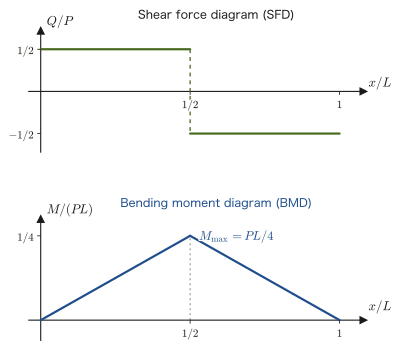
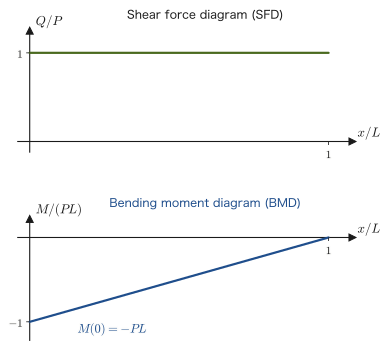
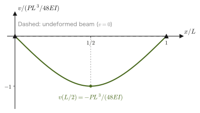

Chapter 20Multiaxial Stress, Bending of Beams, and Torsion
In Chapter 18 and Chapter 19 so far, we have considered only the simple situation in which a bar is pulled or pushed straight in a single direction. Both the stress $\sigma=P/A$ (force ÷ cross-sectional area) learned in high school physics and the strain $\varepsilon$ could be treated adequately as quantities on a single number line (scalars). In a real bridge girder, at the root of an airplane wing, or inside a rotating shaft, however, a given point of a body is pushed, pulled, and sheared simultaneously, not from just one direction but from various directions. Moreover, if we change the direction of viewing (that is, the section by which we cut the body in our thinking), the very values of the normal and shear stresses that appear there change. To evaluate correctly “how many $\mathrm{MPa}$ this material can endure,” we need a method of finding the direction-independent “most severe stress value at that point”—the principal stresses. The first half of this chapter (Sections 20.1–20.4) lays the groundwork for this idea of “multiaxial stress.”
In the second half (Sections 20.5–20.7), we treat the two members that appear most frequently in engineering—the beam (a member, like a bridge girder or a shelf board, that bends under a load applied from the side) and the shaft (a member, like the rotating shaft of a motor, that is subjected to torsion). These two are typical examples of a stress distribution, in which the stress varies from place to place within the cross section. Inside a beam, bending puts one side of the cross section in tension and the opposite side in compression, and the stress varies linearly in proportion to the distance from the neutral axis. Inside a shaft, torsion makes the shear stress vary in proportion to the distance from the center, and at the surface of the shaft the idea of principal stresses learned in the first half can be used as it is (a state of pure shear). Both are built on the same pattern of logic: we find “how the stress is distributed within the cross section” by integration, and from this we derive “the relation between the load and moment applied from outside and the stress and deformation arising inside.”
Let us first list the connections with high school physics. (1) If the orientation of the cross section is allowed to vary freely, $\sigma=P/A$ extends to a matrix (the stress tensor). (2) The power $P=Fv$ (force × speed) becomes $P=T\omega$ (torque × angular velocity) for a rotating shaft. (3) The elastic energy $\frac12kx^2$ stored in a spring becomes, in a continuum, the strain energy density per unit volume. The main aim of this chapter is to go one step beyond the picture of “uniform stress” and to treat “stress that changes with orientation” and “stress distributions whose values vary within the cross section.”
This chapter follows the standard textbooks on mechanics of materials, and the accuracy of its content rests on the classic textbooks listed in the references at the end of the chapter.
- Regarding stress as a matrix of “three directions by three directions” (the stress tensor), and showing that the symmetry $\tau_{xy}=\tau_{yx}$ follows from the balance of moments
- The transformation formulas for normal and shear stresses when the orientation of the section is changed, and the fact that the orientation-independent maximum and minimum normal stresses (the principal stresses) are the eigenvalues of the stress tensor (in three dimensions, three principal stresses and the absolute maximum shear stress)
- A graphical method of finding the principal stresses and the maximum shear stress (Mohr's circle)
- Hooke's law when stresses act in several directions rather than in just one (the generalized Hooke's law, volumetric strain, plane stress and plane strain), the thermal strain and thermal stress produced by temperature changes, and the strain energy stored in a material
- The bending stress $\sigma=My/I$ in a beam, the second moment of area $I$ (rectangle $bh^3/12$, circle $\pi d^4/64$), and the section modulus $Z$
- How to draw shear force diagrams and bending moment diagrams, the differential equation of deflection and the numerical computation of deflection, and the three-point and four-point flexural strengths used in strength tests of ceramics
- The torsional stress $\tau=Tr/J$ in a shaft with a circular cross section, the angle of twist, and the power $P=T\omega$ transmitted by a shaft
Source notes: This chapter supplements material not in the notes. Related notes: Yasuhide Mochizuki, Physics Notes: Mechanics of Materials (handwritten lecture notes, 6 pages in all).
20.1 The Stress Tensor and Its Symmetry
In Chapter 18, for a load $P$ pulling a bar along its axis, we expressed the stress by a single number, $\sigma=P/A$ (the force perpendicular to the cross section $A$, divided by its area). This simplification was allowed only because we were in the special situation of “cutting the bar by a cross section perpendicular to its axis,” where the way of cutting is fixed from the start. In general, the orientation of a cross section through a given point of a body can be chosen freely (cut horizontally, cut obliquely, cut vertically, …). Even at the same point, the values of the normal and shear stresses that appear on the section change with the orientation of the section. Therefore, to specify “the state of stress at that point” with neither too little nor too much information, we must deal with a quantity for which a single number is fixed only when two directions are specified: “the orientation of the section” and “the direction of the force component on that surface.” Whereas a vector (a quantity with magnitude and direction) is something that is determined once one direction is specified, a quantity of this kind, which is determined only when two directions are specified, is called a second-rank tensor (the inertia tensor in rotational motion, touched on briefly in Chapter 10, is also a quantity of the same family).
Consider a small rectangular box (edge lengths $\dd x,\dd y,\dd z$) containing a point inside a body, and let us write out the stresses that arise on its six faces. On the face perpendicular to the $x$ axis (the face whose normal points in the $x$ direction), besides the normal stress $\sigma_x$ in the $x$ direction (or, written redundantly, $\sigma_{xx}$), shear stresses $\tau_{xy},\tau_{xz}$ in the $y$ and $z$ directions within the face can arise. Similarly, $\sigma_y,\tau_{yx},\tau_{yz}$ can arise on the face perpendicular to the $y$ axis, and $\sigma_z,\tau_{zx},\tau_{zy}$ on the face perpendicular to the $z$ axis. The indices of a shear stress are read according to the convention “first index: the direction of the face's normal; second index: the direction in which the stress points” (for example, $\tau_{xy}$ is the shear stress in the $y$ direction that arises on the face whose normal points in the $x$ direction). As in Chapter 18, the sign convention is that a normal stress is positive in tension and negative in compression. In all, nine numbers are collected, and these arranged in the form of a matrix with three rows and three columns (a square matrix) are called the stress tensor.
Definition 20.1: Stress tensor
The state of stress at a point in a body is specified by the following 3×3 square matrix (the stress tensor), which lists the normal and shear stresses arising on each of the three faces perpendicular to the three orthogonal directions $x,y,z$.
\begin{equation} \bm{\sigma}=\begin{pmatrix}\sigma_x&\tau_{xy}&\tau_{xz}\\ \tau_{yx}&\sigma_y&\tau_{yz}\\ \tau_{zx}&\tau_{zy}&\sigma_z\end{pmatrix} \label{eq:20-stress-tensor-def} \end{equation}The diagonal entries $\sigma_x,\sigma_y,\sigma_z$ are the normal stresses in the directions perpendicular to the respective faces, and the off-diagonal entries $\tau_{ij}\ (i\neq j)$ are the shear stresses in the in-plane directions. The stress arising on a section of any orientation can be computed from these nine entries (actually six, as will be shown later).
Caution: Sign of the shear stress
We took tension as positive for the normal stress. The sign of the shear stress is fixed by the following convention: on a positive face (a face whose normal points in the positive direction of a coordinate axis) the positive direction of the coordinate axis is taken as positive, and on a negative face (a face whose normal points in the negative direction of a coordinate axis) the opposite direction is taken as positive. For example, on the face whose normal points in $+x$ (the right face in Figure 20.1), $\tau_{xy}$ is positive when it points in the $+y$ direction, and on the face whose normal points in $-x$ (the left face) it is positive when it points in the $-y$ direction. With this convention, the single number $\tau_{xy}$ simultaneously represents the pair of shear forces of opposite directions and equal magnitudes acting on the opposite faces of the element (the relation of action and reaction). When we read the sign of $\tau$ from Mohr's circle in Section 20.3, we also follow this convention.
Derivation: Symmetry of the shear stress $\tau_{xy}=\tau_{yx}$
For the element of Figure 20.1 (edge length $\dd x$ in the $x$ direction, edge length $\dd y$ in the $y$ direction, depth $\dd z$), consider the balance of moments about an axis through the center and parallel to the $z$ axis. The shear stress $\tau_{xy}$ acting on the right and left faces acts as a force on the area $\dd y\,\dd z$, and its distance from the center (the arm length) is $\dd x/2$, so the magnitude of the moment on each of the right and left faces is
$$ (\tau_{xy}\,\dd y\,\dd z)\times\frac{\dd x}{2} $$and, since the left and right faces exert moments in the same sense (the sense that rotates this element), the total is $\tau_{xy}\,\dd x\,\dd y\,\dd z$. Similarly, the shear stress $\tau_{yx}$ acting on the top and bottom faces acts on the area $\dd x\,\dd z$ and has arm length $\dd y/2$, so the total magnitude of its moment is $\tau_{yx}\,\dd x\,\dd y\,\dd z$. As in Figure 20.1, these two sets of moments act in senses such that $\tau_{xy}$ on the right and left faces tends to rotate the element counterclockwise and $\tau_{yx}$ on the top and bottom faces tends to rotate it clockwise, so they are opposite to each other. The net moment acting on the element ought to make it rotate with an angular acceleration according to the rotational equation of motion (Chapter 10), but the moment of inertia of the element is of the order of the fifth power of the edge length ($\propto\dd x\,\dd y\,\dd z\times(\dd x^2+\dd y^2)$) and approaches 0 much faster than the moment itself (of the order of the third power of the edge length, $\propto\dd x\,\dd y\,\dd z$). Therefore, in the limit in which the element is shrunk to a point ($\dd x,\dd y,\dd z\to0$), the net moment itself must be identically zero:
$$ \tau_{xy}\,\dd x\,\dd y\,\dd z-\tau_{yx}\,\dd x\,\dd y\,\dd z=0 \quad\Longrightarrow\quad \tau_{xy}=\tau_{yx} $$∎
Law 20.1: Symmetry of the stress tensor
In the ordinary situation in which no external force exerting a moment at each point in the body (a body-force couple) acts, the stress tensor is a symmetric matrix:
\begin{equation} \tau_{xy}=\tau_{yx},\qquad \tau_{yz}=\tau_{zy},\qquad \tau_{zx}=\tau_{xz} \label{eq:20-stress-symmetric} \end{equation}(For the $xz$ plane and the $yz$ plane as well, it suffices to carry out exactly the same argument as for Figure 20.1 within each plane.) Therefore, the number of independent entries needed to specify a general three-dimensional state of stress is six, not nine ($\sigma_x,\sigma_y,\sigma_z,\tau_{xy},\tau_{yz},\tau_{zx}$).
Intuition: Why do we need a seemingly difficult quantity called a “tensor”?
The forces and velocities treated in high school physics were vectors (first-rank tensors), carrying two pieces of information, magnitude and direction. Stress is a quantity one step more complicated than that—because it requires two independent pieces of directional information: “which orientation of surface we consider” (the direction of the surface's normal) and “which direction of the force component on that surface we look at” (the direction of the force). In terms of tables (tables of numbers arranged in rows and columns), it helps to picture a vector as corresponding to a “table with only one column” (the numbers are lined up in one column), and a second-rank tensor to a “table with rows and columns” (a table of numbers with three rows and three columns). In mechanics (Chapter 10), we also noted that the “moment of inertia,” which relates the angular momentum $\bm L$ and the torque $\bm N$, becomes, in situations where the direction of the axis of rotation can in general change, a second-rank tensor called the inertia tensor, which has different values depending on direction. The stress tensor is a quantity of the same mathematical family as this; both share the property that, because they are symmetric 3×3 square matrices, the theory of “eigenvalues and eigenvectors of symmetric matrices” learned in University Mathematics, Chapter 12 can be used as it is (Section 20.2).
Example 20.1: Writing down the stress tensor and checking its symmetry
Suppose that the state of stress at a point is a plane stress state (a state with no stress components in the $z$ direction) with $\sigma_x=60\ \mathrm{MPa}$ (tension), $\sigma_y=-20\ \mathrm{MPa}$ (compression), $\sigma_z=0$, $\tau_{xy}=30\ \mathrm{MPa}$, and $\tau_{yz}=\tau_{zx}=0$. Write down the stress tensor in matrix form.
Solution. Using the symmetry $\tau_{xy}=\tau_{yx}=30\ \mathrm{MPa}$ from Law 20.1 and substituting the values into the form of Definition 20.1, we obtain
$$ \bm{\sigma}=\begin{pmatrix}60&30&0\\ 30&-20&0\\ 0&0&0\end{pmatrix}\ \mathrm{MPa} $$The fact that the row and column belonging to the $z$ direction (the third row and the third column) are all 0 expresses what is called “plane stress,” that is, a state in which the stress is effectively confined to the $xy$ plane. We treat this plane stress case in detail from Section 20.2 on.
20.2 Coordinate Transformation of Plane Stress, Principal Stresses, and Maximum Shear Stress
As we saw in Example 20.1, a state in which all the stress components in the $z$ direction are zero is called plane stress. It is a situation that often arises on the surface of a plate-like member and inside thin members. Below, we consider a plane stress state $(\sigma_x,\sigma_y,\tau_{xy})$ and investigate how the values of the normal and shear stresses change when viewed from new axes $x',y'$ obtained by rotating the coordinate axes within the $xy$ plane through an angle $\theta$ (counterclockwise taken as positive).
20.2.1 Coordinate transformation formulas
The unit vectors that give the directions of the new axes are obtained by rotating counterclockwise through the angle $\theta$ from the $x$ axis, so in terms of the original $xy$ components they are written as
$$ \bm{e}_{x'}=(\cos\theta,\ \sin\theta),\qquad \bm{e}_{y'}=(-\sin\theta,\ \cos\theta) $$(this is a review of the idea of rotation in University Mathematics, Section 16.4). A basic property of the stress tensor $\bm\sigma$ (Definition 20.1) is that the stress $\bm t$ on a surface with normal vector $\bm n$ (the force vector per unit area, combining the force that pushes or pulls the surface perpendicularly and the force that shifts it within the surface) is given by the matrix–vector product $\bm t=\bm\sigma\bm n$. Since the entire derivation of the coordinate transformation formulas depends on this relation, let us first derive it, for the case of plane stress, from the force balance of the triangular prism formed by an inclined face and the two coordinate planes.
Derivation: The stress vector $\bm t=\bm\sigma\bm n$ acting on an inclined face
As in Figure 20.2, cut out from around a point a small triangular prism bounded by an inclined face with normal $\bm n=(\cos\theta,\ \sin\theta)$ (area $\dd A$; if the depth is $\dd z$ and the length of the inclined face is $\dd s$, then $\dd A=\dd s\,\dd z$), a face with normal $-x$, and a face with normal $-y$. From the inclination of the inclined face, relative to the hypotenuse $\dd s$ of the triangle, the side parallel to the $y$ direction has length $\dd s\cos\theta$ and the side parallel to the $x$ direction has length $\dd s\sin\theta$. Therefore, the face with normal $-x$ has area $\dd A\cos\theta$ and the face with normal $-y$ has area $\dd A\sin\theta$.
Let $\bm t=(t_x,t_y)$ be the force per unit area acting on the inclined face (the stress vector we want to find). The face with normal $-x$ is related to the face with normal $+x$ as action and reaction, so the force per unit area acting on it is $-(\sigma_x,\ \tau_{xy})$ (on the face with normal $+x$, the force is $\sigma_x$ in the $x$ direction and $\tau_{xy}$ in the $y$ direction). Similarly, on the face with normal $-y$ it is $-(\tau_{xy},\ \sigma_y)$. Writing the force balance on the triangular prism component by component (body forces and fictitious forces (inertial forces) are proportional to the volume, that is, of order the cube of the edge length, so in the limit where the prism is made small they can be neglected compared with the forces on the faces, which are proportional to the area, that is, of order the square of the edge length), we get
$$ \begin{aligned} x\text{-direction:}&\quad t_x\,\dd A-\sigma_x\,(\dd A\cos\theta)-\tau_{xy}\,(\dd A\sin\theta)=0\\ y\text{-direction:}&\quad t_y\,\dd A-\tau_{xy}\,(\dd A\cos\theta)-\sigma_y\,(\dd A\sin\theta)=0 \end{aligned} $$Dividing both sides by $\dd A$, we obtain
$$ \begin{pmatrix}t_x\\ t_y\end{pmatrix}=\begin{pmatrix}\sigma_x\cos\theta+\tau_{xy}\sin\theta\\ \tau_{xy}\cos\theta+\sigma_y\sin\theta\end{pmatrix}=\begin{pmatrix}\sigma_x&\tau_{xy}\\ \tau_{xy}&\sigma_y\end{pmatrix}\begin{pmatrix}\cos\theta\\ \sin\theta\end{pmatrix} $$that is, $\bm t=\bm\sigma\bm n$. (In three dimensions, exactly the same argument can be made using a tetrahedron, and $\bm t=\bm\sigma\bm n$ holds.)
∎
Derivation: The coordinate transformation formulas
The stress vector acting on the face perpendicular to the new $x'$ axis (normal $\bm n=\bm e_{x'}$) is
$$ \bm t=\bm\sigma\bm e_{x'}=\begin{pmatrix}\sigma_x&\tau_{xy}\\ \tau_{xy}&\sigma_y\end{pmatrix}\begin{pmatrix}\cos\theta\\ \sin\theta\end{pmatrix}=\begin{pmatrix}\sigma_x\cos\theta+\tau_{xy}\sin\theta\\ \tau_{xy}\cos\theta+\sigma_y\sin\theta\end{pmatrix} $$The normal stress $\sigma_{x'}$ on this face is the $x'$-direction component of the stress vector $\bm t$ (that is, $\bm t\cdot\bm e_{x'}$), and the shear stress $\tau_{x'y'}$ is its $y'$-direction component ($\bm t\cdot\bm e_{y'}$):
$$ \sigma_{x'}=\bm t\cdot\bm e_{x'}=(\sigma_x\cos\theta+\tau_{xy}\sin\theta)\cos\theta+(\tau_{xy}\cos\theta+\sigma_y\sin\theta)\sin\theta =\sigma_x\cos^2\theta+\sigma_y\sin^2\theta+2\tau_{xy}\sin\theta\cos\theta $$ $$ \tau_{x'y'}=\bm t\cdot\bm e_{y'}=-(\sigma_x\cos\theta+\tau_{xy}\sin\theta)\sin\theta+(\tau_{xy}\cos\theta+\sigma_y\sin\theta)\cos\theta =(\sigma_y-\sigma_x)\sin\theta\cos\theta+\tau_{xy}(\cos^2\theta-\sin^2\theta) $$Here we use the double-angle formulas $\cos^2\theta=\dfrac{1+\cos2\theta}2,\ \sin^2\theta=\dfrac{1-\cos2\theta}2,\ 2\sin\theta\cos\theta=\sin2\theta,\ \cos^2\theta-\sin^2\theta=\cos2\theta$ (from high school mathematics; see High School Mathematics, Chapter 5) to simplify, and the result takes the following form:
\begin{equation} \sigma_{x'}=\frac{\sigma_x+\sigma_y}{2}+\frac{\sigma_x-\sigma_y}{2}\cos2\theta+\tau_{xy}\sin2\theta \label{eq:20-transform-sigma} \end{equation} \begin{equation} \tau_{x'y'}=-\frac{\sigma_x-\sigma_y}{2}\sin2\theta+\tau_{xy}\cos2\theta \label{eq:20-transform-tau} \end{equation}$\sigma_{y'}$ is obtained by replacing $\theta\to\theta+90°$ in Eq. \eqref{eq:20-transform-sigma} ($\cos2\theta\to-\cos2\theta,\ \sin2\theta\to-\sin2\theta$): $\sigma_{y'}=\dfrac{\sigma_x+\sigma_y}2-\dfrac{\sigma_x-\sigma_y}2\cos2\theta-\tau_{xy}\sin2\theta$. Adding this to Eq. \eqref{eq:20-transform-sigma} gives $\sigma_{x'}+\sigma_{y'}=\sigma_x+\sigma_y$ (a constant independent of $\theta$), which shows that the sum of the normal stresses does not change however we cut (this is called an invariant of the stress).
∎
Formula 20.1: Coordinate transformation formulas for plane stress
When the plane stress state $(\sigma_x,\sigma_y,\tau_{xy})$ is viewed from the axes $x',y'$ obtained by rotating counterclockwise through an angle $\theta$ from the $x$ axis,
\begin{equation} \sigma_{x'}=\frac{\sigma_x+\sigma_y}{2}+\frac{\sigma_x-\sigma_y}{2}\cos2\theta+\tau_{xy}\sin2\theta,\qquad \tau_{x'y'}=-\frac{\sigma_x-\sigma_y}{2}\sin2\theta+\tau_{xy}\cos2\theta \label{eq:20-transform-summary} \end{equation}$\sigma_{y'}$ is obtained from the expression for $\sigma_{x'}$ in Eq. \eqref{eq:20-transform-summary} by setting $\theta\to\theta+90°$, and $\sigma_{x'}+\sigma_{y'}=\sigma_x+\sigma_y$ always holds.
20.2.2 Principal stresses — eigenvalues of the stress tensor
Looking at Eq. \eqref{eq:20-transform-summary}, we see that as $\theta$ is varied, $\sigma_{x'}$ oscillates because of the terms in $\cos2\theta,\sin2\theta$ and takes its maximum and minimum values at certain specific orientations. The orientation of the special face on which the normal stress takes an extremum and, at the same time, the shear stress $\tau_{x'y'}$ is exactly zero is called a principal plane, and the normal stress on it is called a principal stress.
To find the principal stresses we could set $\tau_{x'y'}=0$ and solve Eq. \eqref{eq:20-transform-summary}, but here we get a clearer view by using the idea of eigenvalues learned in University Mathematics, Chapter 12. That the new axis $x'$ is along the normal of a principal plane means that there is no shear stress on that face and the stress vector $\bm t=\bm\sigma\bm n$ points in exactly the same direction as the normal $\bm n$ (with magnitude $\lambda$ times as large); that is, it means
$$ \bm\sigma\bm n=\lambda\bm n $$This is precisely the equation for finding the eigenvalue $\lambda$ and eigenvector $\bm n$ of the matrix $\bm\sigma$ (the definition in University Mathematics, Section 12.1). Therefore, the principal stresses are the eigenvalues of the stress tensor, and the normal directions of the principal planes are the directions of the corresponding eigenvectors.
Derivation: The formula for the principal stresses in plane stress
The eigenvalues are obtained as the solutions of the characteristic equation $\det(\bm\sigma-\lambda I)=0$ (University Mathematics, Section 12.2):
$$ \det\begin{pmatrix}\sigma_x-\lambda&\tau_{xy}\\ \tau_{xy}&\sigma_y-\lambda\end{pmatrix}=(\sigma_x-\lambda)(\sigma_y-\lambda)-\tau_{xy}^2=0 $$Expanding, we obtain
$$ \lambda^2-(\sigma_x+\sigma_y)\lambda+(\sigma_x\sigma_y-\tau_{xy}^2)=0 $$a quadratic equation in $\lambda$. Using the quadratic formula,
$$ \lambda=\frac{(\sigma_x+\sigma_y)\pm\sqrt{(\sigma_x+\sigma_y)^2-4(\sigma_x\sigma_y-\tau_{xy}^2)}}{2} $$Simplifying the expression under the root gives $(\sigma_x+\sigma_y)^2-4\sigma_x\sigma_y+4\tau_{xy}^2=(\sigma_x-\sigma_y)^2+4\tau_{xy}^2$, so
\begin{equation} \sigma_{1,2}=\frac{\sigma_x+\sigma_y}{2}\pm\sqrt{\left(\frac{\sigma_x-\sigma_y}{2}\right)^2+\tau_{xy}^2} \label{eq:20-principal-stress} \end{equation}is obtained (the larger is $\sigma_1$ and the smaller is $\sigma_2$, the maximum and minimum principal stresses). Corresponding to the fact that the eigenvalues of a symmetric matrix are always real (University Mathematics, Section 12.2), the expression under the root, $\left(\frac{\sigma_x-\sigma_y}2\right)^2+\tau_{xy}^2$, is a sum of squares of two real numbers and hence always greater than or equal to 0, so $\sigma_{1,2}$ are always real.
The orientation $\theta_{\mathrm p}$ of the principal plane can also be found directly from the coordinate transformation formula. Differentiating $\sigma_{x'}$ in Eq. \eqref{eq:20-transform-summary} with respect to $\theta$ gives
$$ \diff{\sigma_{x'}}{\theta}=-(\sigma_x-\sigma_y)\sin2\theta+2\tau_{xy}\cos2\theta=2\left[-\frac{\sigma_x-\sigma_y}{2}\sin2\theta+\tau_{xy}\cos2\theta\right]=2\tau_{x'y'} $$(the last equality comes from comparison with $\tau_{x'y'}$ in Eq. \eqref{eq:20-transform-summary}). Therefore, the faces on which the normal stress $\sigma_{x'}$ takes an extremum are precisely the faces on which the shear stress $\tau_{x'y'}$ is zero, which is consistent with the definition of a principal plane (zero shear stress). Solving $\tau_{x'y'}=0$ for $\theta_{\mathrm p}$, from $-\dfrac{\sigma_x-\sigma_y}2\sin2\theta_{\mathrm p}+\tau_{xy}\cos2\theta_{\mathrm p}=0$ we obtain
\begin{equation} \tan2\theta_{\mathrm p}=\frac{2\tau_{xy}}{\sigma_x-\sigma_y} \label{eq:20-principal-angle} \end{equation}Let us verify that the value of $\sigma_{x'}$ at this angle agrees with Eq. \eqref{eq:20-principal-stress}. Let $a\equiv\dfrac{\sigma_x-\sigma_y}2,\ b\equiv\tau_{xy},\ r\equiv\sqrt{a^2+b^2}$. There are two values of $2\theta_{\mathrm p}$ satisfying $\tan2\theta_{\mathrm p}=b/a$, differing by $180°$, and from the right triangle (opposite side $b$, adjacent side $a$, hypotenuse $r$),
$$ (\cos2\theta_{\mathrm p},\ \sin2\theta_{\mathrm p})=\pm\left(\frac ar,\ \frac br\right) $$Substituting this into $\sigma_{x'}=\dfrac{\sigma_x+\sigma_y}2+a\cos2\theta+b\sin2\theta$ of Eq. \eqref{eq:20-transform-summary} gives
$$ \sigma_{x'}=\frac{\sigma_x+\sigma_y}2\pm\left(a\cdot\frac ar+b\cdot\frac br\right)=\frac{\sigma_x+\sigma_y}2\pm\frac{a^2+b^2}{r}=\frac{\sigma_x+\sigma_y}2\pm r $$and since $r=\sqrt{\left(\frac{\sigma_x-\sigma_y}2\right)^2+\tau_{xy}^2}$, this agrees exactly with Eq. \eqref{eq:20-principal-stress}. The method based on eigenvalues and the method of searching for the angle at which the shear stress vanishes, two seemingly separate approaches, arrive at the same answer. Also, the solutions of $\tan2\theta_{\mathrm p}$ give two principal planes, $\theta_{\mathrm p}$ and $\theta_{\mathrm p}+90°$, and from the calculation above, the plane that takes the upper sign ($\cos2\theta_{\mathrm p}=a/r,\ \sin2\theta_{\mathrm p}=b/r$) is the plane of the maximum principal stress $\sigma_1$, and the plane rotated by $90°$ is the plane of the minimum principal stress $\sigma_2$ (we use this way of telling them apart in Example 20.2).
∎
Law 20.2: Formula for the principal stresses
The two principal stresses in the plane stress state $(\sigma_x,\sigma_y,\tau_{xy})$ are given, as eigenvalues of the stress tensor, by
\begin{equation} \sigma_{1,2}=\frac{\sigma_x+\sigma_y}{2}\pm\sqrt{\left(\frac{\sigma_x-\sigma_y}{2}\right)^2+\tau_{xy}^2} \label{eq:20-principal-stress-law} \end{equation}and the orientation of the corresponding plane (the angle measured from the $x$ axis) is given by $\tan2\theta_{\mathrm p}=\dfrac{2\tau_{xy}}{\sigma_x-\sigma_y}$. By definition, no shear stress acts on a principal plane.
20.2.3 Maximum shear stress (in-plane)
The shear stress $\tau_{x'y'}$ (Eq. \eqref{eq:20-transform-summary}) also has a local maximum and minimum as $\theta$ is varied. Setting $\dfrac{\dd\tau_{x'y'}}{\dd\theta}=-(\sigma_x-\sigma_y)\cos2\theta-2\tau_{xy}\sin2\theta=0$, the angle $\theta_{\mathrm s}$ at which the extremum occurs satisfies
$$ \tan2\theta_{\mathrm s}=-\frac{\sigma_x-\sigma_y}{2\tau_{xy}} $$Comparing this with $\tan2\theta_{\mathrm p}$ in Eq. \eqref{eq:20-principal-angle}, we see that it satisfies the relation $\tan2\theta_{\mathrm s}\times\tan2\theta_{\mathrm p}=-1$—that is, $2\theta_{\mathrm s}$ and $2\theta_{\mathrm p}$ differ by a right angle (by the addition formulas of high school mathematics, $\tan(\alpha+90°)=-1/\tan\alpha$, so $\tan\alpha\tan\beta=-1$ holds when $\alpha$ and $\beta$ differ by $90°$)—and hence $\theta_{\mathrm s}=\theta_{\mathrm p}\pm45°$; that is, we find that the face on which the maximum shear stress occurs is the face inclined at exactly $45°$ to a principal plane.
Let us find the magnitude of the shear stress on this face. Using the symbols $a,b,r$ above and letting $(\cos2\theta_{\mathrm p},\sin2\theta_{\mathrm p})=(a/r,\ b/r)$, when $2\theta_{\mathrm s}=2\theta_{\mathrm p}-90°$ we have $\cos2\theta_{\mathrm s}=\sin2\theta_{\mathrm p}=b/r,\ \sin2\theta_{\mathrm s}=-\cos2\theta_{\mathrm p}=-a/r$ (the $90°$-shift formulas for trigonometric functions). Substituting this into Eq. \eqref{eq:20-transform-summary} gives
$$ \tau_{x'y'}=-a\sin2\theta_{\mathrm s}+b\cos2\theta_{\mathrm s}=-a\cdot\left(-\frac ar\right)+b\cdot\frac br=\frac{a^2+b^2}{r}=r,\qquad \sigma_{x'}=\frac{\sigma_x+\sigma_y}2+a\cdot\frac br+b\cdot\left(-\frac ar\right)=\frac{\sigma_x+\sigma_y}2 $$(on the face with $2\theta_{\mathrm s}=2\theta_{\mathrm p}+90°$, only the sign is reversed, giving $-r$). Therefore, the magnitude of the maximum shear stress on this face is exactly the square-root part of Eq. \eqref{eq:20-principal-stress-law}, and it equals half the difference of the two principal stresses:
\begin{equation} \tau_{\max}=\sqrt{\left(\frac{\sigma_x-\sigma_y}{2}\right)^2+\tau_{xy}^2}=\frac{\sigma_1-\sigma_2}{2} \label{eq:20-max-shear} \end{equation}Also, a normal stress $(\sigma_x+\sigma_y)/2$ (the mean of the two principal stresses) acts simultaneously on the face of maximum shear stress.
Caution: Eq. \eqref{eq:20-max-shear} gives the maximum shear stress “within the $xy$ plane”
What Eq. \eqref{eq:20-max-shear} gives is the maximum shear stress among the faces perpendicular to the $xy$ plane (faces whose normals lie in the $xy$ plane). In plane stress there is also a principal stress $\sigma_3=0$ in the $z$ direction (“the stress is zero”), and when this is included, if $\sigma_1,\sigma_2$ have the same sign, a shear stress larger than the in-plane value arises on another face. For example, if $\sigma_1=80\ \mathrm{MPa},\ \sigma_2=20\ \mathrm{MPa}$, the in-plane maximum shear stress is $(80-20)/2=30\ \mathrm{MPa}$, but there is a face with $(80-0)/2=40\ \mathrm{MPa}$ obtained using $\sigma_3=0$ (Section 20.2.4 below). If $\sigma_1$ and $\sigma_2$ have opposite signs (for example, in Example 20.2, or on the surface of a shaft subjected to torsion), the in-plane value is itself the maximum.
Intuition: Why does the “danger” change with the way we cut?
Ductile materials such as metals often yield through slip (dislocation motion) along the face of maximum shear stress (more precisely, the absolute maximum shear stress of the next Section 20.2.4), whereas brittle materials such as ceramics and glass often split cleanly along the plane perpendicular to the maximum tensile principal stress (to be studied in detail in Chapter 21; a crack tends to propagate in the direction perpendicular to the maximum principal stress). Even for the same stress state, whether we should attend to the “principal stress (extremum of the normal stress)” or to the “maximum shear stress” depends on how the material fractures; this idea also arises repeatedly in practical material selection and strength evaluation.
Example 20.2: Computing the principal stresses and the maximum shear stress
For the state of stress $\sigma_x=60\ \mathrm{MPa}$, $\sigma_y=-20\ \mathrm{MPa}$, $\tau_{xy}=30\ \mathrm{MPa}$ of Example 20.1, find the principal stresses $\sigma_1,\sigma_2$, the orientation $\theta_{\mathrm p}$ of the principal plane, and the maximum shear stress $\tau_{\max}$.
Solution. Computing the mean value and the half-difference, we obtain
$$ \frac{\sigma_x+\sigma_y}2=\frac{60+(-20)}2=20\ \mathrm{MPa},\qquad \frac{\sigma_x-\sigma_y}2=\frac{60-(-20)}2=40\ \mathrm{MPa} $$The value under the square root is $\sqrt{40^2+30^2}=\sqrt{1600+900}=\sqrt{2500}=50\ \mathrm{MPa}$, so by Eq. \eqref{eq:20-principal-stress-law},
$$ \sigma_1=20+50=70\ \mathrm{MPa},\qquad \sigma_2=20-50=-30\ \mathrm{MPa} $$The orientation of the principal plane is given by Eq. \eqref{eq:20-principal-angle}: $\tan2\theta_{\mathrm p}=\dfrac{2\times30}{60-(-20)}=\dfrac{60}{80}=0.75$, so $2\theta_{\mathrm p}=\arctan0.75\approx36.87°$ and $\theta_{\mathrm p}\approx18.43°$. Here $a=40,\ b=30,\ r=50$, and $\cos2\theta_{\mathrm p}=a/r=0.8\gt0,\ \sin2\theta_{\mathrm p}=b/r=0.6\gt0$, which corresponds to the combination of signs (the upper signs). Hence the plane at $\theta_{\mathrm p}\approx18.43°$ is the plane of the maximum principal stress $\sigma_1=70\ \mathrm{MPa}$, and the plane rotated from it by $90°$, at $\theta\approx108.43°$, is the plane of $\sigma_2=-30\ \mathrm{MPa}$. By Eq. \eqref{eq:20-max-shear}, the maximum shear stress is exactly equal to the value under the square root, $\tau_{\max}=50\ \mathrm{MPa}$ (it acts on a plane inclined at $45°$ from the principal plane, where a tensile mean stress of $20\ \mathrm{MPa}$ also acts at the same time). Since $\sigma_1,\sigma_2$ have opposite signs, this is also the absolute maximum shear stress (Section 20.2.4).
(Check by another method: solving the characteristic equation $\det(\bm\sigma-\lambda I)=(60-\lambda)(-20-\lambda)-30^2=\lambda^2-40\lambda-2100=0$ directly, we obtain $\lambda=\dfrac{40\pm\sqrt{1600+8400}}2=\dfrac{40\pm100}2=70,\ -30$, which agrees with the results above.)
20.2.4 Three-dimensional states of stress — the three principal stresses and the absolute maximum shear stress
So far we have considered plane stress, in which there is no stress in the $z$ direction. The idea of principal stresses extends directly to a general three-dimensional state of stress. The stress tensor (Definition 20.1) is a symmetric 3×3 matrix (Law 20.1), so we can use the theory in University Mathematics, Section 12.2 (all the eigenvalues of a real symmetric matrix are real, and eigenvectors belonging to distinct eigenvalues are mutually orthogonal).
Theorem 20.1: Principal stresses in three dimensions
The stress tensor $\bm\sigma$ has three real eigenvalues $\sigma_1\ge\sigma_2\ge\sigma_3$ (the principal stresses), and the corresponding eigenvectors give three mutually orthogonal directions (the principal axes). If the principal axes are chosen as the coordinate axes, all the shear stresses vanish, and the tensor is diagonalized as $\bm\sigma=\mathrm{diag}(\sigma_1,\sigma_2,\sigma_3)$. The principal stresses are the three solutions of the characteristic equation
\begin{equation} \det(\bm\sigma-\lambda I)=0\quad\Longleftrightarrow\quad \lambda^3-I_1\lambda^2+I_2\lambda-I_3=0 \label{eq:20-cubic-principal} \end{equation}Here $I_1=\sigma_x+\sigma_y+\sigma_z,\ I_2=\sigma_x\sigma_y+\sigma_y\sigma_z+\sigma_z\sigma_x-\tau_{xy}^2-\tau_{yz}^2-\tau_{zx}^2,\ I_3=\det\bm\sigma$ are quantities that do not depend on the choice of coordinate axes (the stress invariants), and $I_1=\sigma_1+\sigma_2+\sigma_3$, $I_2=\sigma_1\sigma_2+\sigma_2\sigma_3+\sigma_3\sigma_1$, and $I_3=\sigma_1\sigma_2\sigma_3$ hold.
In plane stress ($\sigma_z=\tau_{yz}=\tau_{zx}=0$), the direction of the $z$-axis is an eigenvector with eigenvalue $0$ ($\bm\sigma\bm e_z=\bm0=0\cdot\bm e_z$). Hence the three principal stresses are the set consisting of $\sigma_1,\sigma_2$ of Law 20.2 together with $0$, and depending on the magnitudes and signs of $\sigma_1,\sigma_2$, the value $0$ can be the largest, the middle, or the smallest of the three. Therefore, the plane stress result, which needed only a quadratic equation, must be supplemented by the remark that “there is a third principal stress, $\sigma_3=0$.”
Next, let us consider in three dimensions which orientation of plane gives the maximum shear stress. To state the result first, it is half the difference between the maximum and minimum values of the principal stresses (Eq. \eqref{eq:20-abs-max-shear}). Its derivation is as follows.
Derivation: The absolute maximum shear stress in three dimensions
Take the principal axes as the coordinate axes, and let the unit normal vector of an inclined plane be $\bm n=(n_1,n_2,n_3)$. The stress vector on this plane is $\bm t=\bm\sigma\bm n=(\sigma_1n_1,\ \sigma_2n_2,\ \sigma_3n_3)$, and the normal stress (the component of $\bm t$ in the direction of $\bm n$) is $\sigma_n=\bm t\cdot\bm n=\sigma_1n_1^2+\sigma_2n_2^2+\sigma_3n_3^2$. The shear stress $\tau$ is the magnitude of the in-plane component of $\bm t$, so by the Pythagorean theorem $\tau^2=\abs{\bm t}^2-\sigma_n^2$, and therefore
$$ \tau^2=\sigma_1^2n_1^2+\sigma_2^2n_2^2+\sigma_3^2n_3^2-\left(\sigma_1n_1^2+\sigma_2n_2^2+\sigma_3n_3^2\right)^2 $$Let $s_i\equiv n_i^2\ (\ge0)$. Since $\bm n$ is a unit vector, $s_1+s_2+s_3=1$. If we read the $s_i$ as “weights,” then $\sigma_n=\sum s_i\sigma_i$ is the weighted mean of the $\sigma_i$, and $\sum s_i\sigma_i^2$ is the weighted mean of the $\sigma_i^2$, so $\tau^2$ is “the mean of the squares $-$ the square of the mean,” that is, exactly the (weighted) spread (variance) of the $\sigma_i$. For any constant $c$, the following holds:
$$ \sum_i s_i(\sigma_i-c)^2=\sum_is_i\sigma_i^2-2c\,\sigma_n+c^2=\tau^2+(\sigma_n-c)^2\ \ge\ \tau^2 $$Now take $c=(\sigma_1+\sigma_3)/2$. Since $\sigma_3\le\sigma_i\le\sigma_1$, we have $\abs{\sigma_i-c}\le(\sigma_1-\sigma_3)/2$ for every $i$, so the left-hand side is at most $\left(\dfrac{\sigma_1-\sigma_3}2\right)^2\sum s_i=\left(\dfrac{\sigma_1-\sigma_3}2\right)^2$. Therefore $\tau\le(\sigma_1-\sigma_3)/2$. Equality holds when $n_2=0$ (the normal is perpendicular to the principal axis of $\sigma_2$, that is, the plane contains the direction of the principal axis of $\sigma_2$) and $n_1^2=n_3^2=\dfrac12$ (the normal bisects the angle between the principal axes of $\sigma_1$ and $\sigma_3$, at $45°$ to each).
∎
Therefore, the maximum value of the shear stress acting on a plane of arbitrary orientation in a three-dimensional state of stress (the absolute maximum shear stress) is half the difference between the maximum and minimum values of the three principal stresses:
\begin{equation} \tau_{\max}^{\mathrm{abs}}=\frac{\sigma_{\max}-\sigma_{\min}}2 \label{eq:20-abs-max-shear} \end{equation}In plane stress, the three principal stresses, including $\sigma_3=0$, are $\sigma_1,\sigma_2,0$, and the maximum and minimum values are chosen among them. The quantity $(\sigma_1-\sigma_2)/2$ in Eq. \eqref{eq:20-max-shear} is the maximum value restricted to planes within the $xy$ plane.
Example 20.3: Absolute maximum shear stress in a plane stress state
For the plane stress state $\sigma_x=68\ \mathrm{MPa}$, $\sigma_y=32\ \mathrm{MPa}$, $\tau_{xy}=24\ \mathrm{MPa}$ ($\sigma_z=\tau_{yz}=\tau_{zx}=0$), find the three principal stresses, the in-plane maximum shear stress, and the absolute maximum shear stress.
Solution. $\dfrac{\sigma_x+\sigma_y}2=\dfrac{68+32}2=50\ \mathrm{MPa}$, $\dfrac{\sigma_x-\sigma_y}2=\dfrac{68-32}2=18\ \mathrm{MPa}$, and the value under the square root is $\sqrt{18^2+24^2}=\sqrt{324+576}=\sqrt{900}=30\ \mathrm{MPa}$, so by Law 20.2, $\sigma_1=50+30=80\ \mathrm{MPa}$ and $\sigma_2=50-30=20\ \mathrm{MPa}$. The principal stress in the $z$ direction is $\sigma_3=0$. Therefore, the three principal stresses are $80,\ 20,\ 0\ \mathrm{MPa}$.
The in-plane maximum shear stress is, by Eq. \eqref{eq:20-max-shear}, $(\sigma_1-\sigma_2)/2=(80-20)/2=30\ \mathrm{MPa}$. The absolute maximum shear stress, on the other hand, is obtained from the maximum value $\sigma_{\max}=80\ \mathrm{MPa}$ and the minimum value $\sigma_{\min}=0$ by Eq. \eqref{eq:20-abs-max-shear}: $(80-0)/2=40\ \mathrm{MPa}$. Since $\sigma_1,\sigma_2$ have the same sign, the value $40\ \mathrm{MPa}$, which is larger than the in-plane value $30\ \mathrm{MPa}$, occurs on the plane whose normal bisects the angle between the principal axis of $\sigma_1$ and the $z$-axis at $45°$ to each (the plane containing the direction of the principal axis of $\sigma_2$). (Check by another method: among the combinations of the three principal stresses, $(\sigma_1-\sigma_2)/2=30,\ (\sigma_1-\sigma_3)/2=40,\ (\sigma_2-\sigma_3)/2=10\ \mathrm{MPa}$, the largest is $40\ \mathrm{MPa}$. This agrees with the radii of the three Mohr's circles in Section 20.3.2.)
20.3 Mohr's Circle
20.3.1 Mohr's circle for plane stress
Looking at the coordinate transformation formulas, Eq. \eqref{eq:20-transform-summary} of Section 20.2, we see that $\sigma_{x'}$ and $\tau_{x'y'}$ are both linear expressions in $\cos2\theta,\sin2\theta$. From this we can conjecture that the locus traced by the point $(\sigma_{x'},\tau_{x'y'})$ as $\theta$ varies may in fact be a simple figure (a circle). The method of checking this conjecture and finding the principal stresses and the maximum shear stress graphically is Mohr's circle, devised in 1882 by Otto Mohr (1835–1918).
Derivation: The coordinate transformation formulas trace out a circle
Let $\sigma_{\mathrm{avg}}\equiv\dfrac{\sigma_x+\sigma_y}2$ (the average of the normal stresses), and rewrite Eq. \eqref{eq:20-transform-summary} in terms of $\sigma_{x'}-\sigma_{\mathrm{avg}}$. This gives
$$ \sigma_{x'}-\sigma_{\mathrm{avg}}=\frac{\sigma_x-\sigma_y}2\cos2\theta+\tau_{xy}\sin2\theta,\qquad \tau_{x'y'}=-\frac{\sigma_x-\sigma_y}2\sin2\theta+\tau_{xy}\cos2\theta $$Now let $a\equiv\dfrac{\sigma_x-\sigma_y}2,\ b\equiv\tau_{xy}$ and form the sum of the squares of the two equations:
$$ (\sigma_{x'}-\sigma_{\mathrm{avg}})^2+\tau_{x'y'}^2 =(a\cos2\theta+b\sin2\theta)^2+(-a\sin2\theta+b\cos2\theta)^2 $$Expanding the right-hand side gives $a^2\cos^22\theta+2ab\sin2\theta\cos2\theta+b^2\sin^22\theta+a^2\sin^22\theta-2ab\sin2\theta\cos2\theta+b^2\cos^22\theta$. The terms in $\sin2\theta\cos2\theta$ (two terms of opposite sign) cancel, and using $\cos^2+\sin^2=1$ (the fundamental trigonometric identity), we obtain
\begin{equation} (\sigma_{x'}-\sigma_{\mathrm{avg}})^2+\tau_{x'y'}^2=a^2+b^2=\left(\frac{\sigma_x-\sigma_y}2\right)^2+\tau_{xy}^2\equiv R^2 \label{eq:20-mohr-circle} \end{equation}Thus the sum takes a constant value independent of $\theta$. This means that, in the $(\sigma,\tau)$ plane, the point $(\sigma_{x'},\tau_{x'y'})$ lies on the circle with center $(\sigma_{\mathrm{avg}},0)$ and radius $R$ (the same quantity as the maximum shear stress in Eq. \eqref{eq:20-max-shear})—this is Mohr's circle. Furthermore, the point corresponding to $\theta=0$ (the $x$ axis itself) is $(\sigma_{x'}-\sigma_{\mathrm{avg}},\tau_{x'y'})=(a\cos0+b\sin0,\,-a\sin0+b\cos0)=(a,b)$, that is, the point with coordinates $(\sigma_x,\tau_{xy})$ on the circle. The point corresponding to a general $\theta$ is obtained by rotating $(a,b)$ about the center through the angle $2\theta$ clockwise ($(a\cos2\theta+b\sin2\theta,\,-a\sin2\theta+b\cos2\theta)$ coincides with the result of applying the clockwise rotation matrix $\begin{pmatrix}\cos2\theta&\sin2\theta\\-\sin2\theta&\cos2\theta\end{pmatrix}$ to $(a,b)$—for the form of the rotation matrix, see University Mathematics, Section 16.4). In other words, when the actual cross section is rotated counterclockwise through $\theta$, the corresponding point on Mohr's circle rotates clockwise through $2\theta$ about the same center—the correspondence reverses the sense of rotation and doubles the angle.
In particular, for $\theta=90°$ (the plane whose normal is the $y$ axis itself), $2\theta=180°$ and $(\sigma_{x'}-\sigma_{\mathrm{avg}},\tau_{x'y'})=(-a,-b)$, that is, the point with coordinates $(\sigma_y,-\tau_{xy})$ on the circle (note that $\sigma_{\mathrm{avg}}-a=\sigma_y$). This is the point symmetric to the point $A=(\sigma_x,\tau_{xy})$ with respect to the center of the circle, that is, the other end of the diameter, on the opposite side from $A$. The reason the angle is doubled is that the coordinate transformation formulas are linear in $\cos2\theta,\sin2\theta$. Since the orientations $\theta$ and $\theta+180°$ represent the same plane (only the normal points in the opposite direction), the stress components, as functions of $\theta$, have period $180°$, and while $\theta$ runs from $0°$ to $180°$, the point on the circle goes around exactly once ($360°=2\times180°$); that is the reason.
A note on signs: In this book, the $\tau$ axis is taken pointing upward, and $\tau_{xy}$ itself is used as the value on the vertical axis (the sign convention of Section 20.1). Some textbooks instead plot points with $\tau_{xy}>0$ on the lower side of the $\tau$ axis (taking the vertical axis downward), which has the advantage that “the sense of rotation of the cross section and the sense of rotation on the circle agree.” Either convention leads to the same conclusions (the values of the principal stresses and the maximum shear stress).
∎
Theorem 20.2: Mohr's circle
For a plane stress state $(\sigma_x,\sigma_y,\tau_{xy})$, the point $A=(\sigma_x,\tau_{xy})$ (corresponding to the $x$ face) and the point $B=(\sigma_y,-\tau_{xy})$ (corresponding to the $y$ face) lie at the two ends of a diameter of the circle in the $(\sigma,\tau)$ plane with center $C=\left(\dfrac{\sigma_x+\sigma_y}2,0\right)$ and radius $R=\sqrt{\left(\dfrac{\sigma_x-\sigma_y}2\right)^2+\tau_{xy}^2}$. When the cross section is rotated counterclockwise through an angle $\theta$, the point $(\sigma_{x'},\tau_{x'y'})$ can be read off graphically as the point obtained by rotating clockwise through an angle $2\theta$ from the point $A$ along this circle.
With Mohr's circle, the principal stresses and the maximum shear stress can be “read off” rather than calculated. Of the two points where the circle meets the $\sigma$ axis (the axis $\tau=0$), the right-hand one (the one with larger $\sigma$) gives the maximum principal stress $\sigma_1=\sigma_{\mathrm{avg}}+R$, and the left-hand one gives the minimum principal stress $\sigma_2=\sigma_{\mathrm{avg}}-R$ (both intersection points are at distance $R$ from the center). The absolute value of the $\tau$ coordinate of the top and bottom points of the circle (where $\sigma=\sigma_{\mathrm{avg}}$) is the maximum shear stress $\tau_{\max}=R$—all of these agree exactly with Eqs. \eqref{eq:20-principal-stress-law} and \eqref{eq:20-max-shear}, which we obtained by calculation in Section 20.2.
![Mohr's circle for the stress state of Example 20.2, sigma_x=60MPa, sigma_y=-20MPa, tau_xy=30MPa. On the circle with center (20,0) MPa and radius 50 MPa, point A(60,30) and point B(-20,-30) are plotted as the two ends of a diameter; the right-hand point where the circle meets the sigma axis gives the maximum principal stress 70 MPa, the left-hand point gives the minimum principal stress -30 MPa, and the top and bottom of the circle give the maximum shear stress plus or minus 50 MPa. The position 36.9 degrees clockwise from point A is the plane of sigma_1, and the position 60 degrees clockwise is point D(66.0,-19.6) for the plane theta=30 degrees](figs/ch20_fig20-3.svg)
Example 20.4: Reading Mohr's circle
From Mohr's circle of Figure 20.3, read off the principal stresses $\sigma_1,\sigma_2$, the maximum shear stress $\tau_{\max}$, and the orientation $\theta_{\mathrm p}$ of the plane of the maximum principal stress for Example 20.2, and confirm that they agree with the calculated values. Also read off, on the circle, the stresses $\sigma_{x'},\tau_{x'y'}$ on the plane tilted counterclockwise by $\theta=30°$ from the $x$ axis, and verify that they agree with Formula 20.1.
Solution. The center of the circle is $C=\left(\dfrac{60+(-20)}2,0\right)=(20,0)$, and the radius is $R=\sqrt{\left(\dfrac{60-(-20)}2\right)^2+30^2}=\sqrt{40^2+30^2}=50$ (Eq. \eqref{eq:20-mohr-circle}). The points where the circle meets the $\sigma$ axis are $\sigma=20\pm50$; the right-hand one is $\sigma_1=70\ \mathrm{MPa}$ and the left-hand one is $\sigma_2=-30\ \mathrm{MPa}$ (in agreement with the results calculated in Example 20.2). The $\tau$ coordinates of the top and bottom of the circle are $\pm R=\pm50\ \mathrm{MPa}$, which also agrees with $\tau_{\max}=50\ \mathrm{MPa}$ in Example 20.2.
The orientation of the plane of the maximum principal stress is found by turning clockwise through $36.87°$ from the point $A$ (the position at $\arctan(30/40)\approx36.87°$ counterclockwise from the positive direction of the $\sigma$ axis, seen from $C$) to the point $\sigma_1$ (the positive direction of the $\sigma$ axis). This is the angle $2\theta_{\mathrm p}$ on the circle, so $\theta_{\mathrm p}=36.87°/2\approx18.4°$, which agrees with $\theta_{\mathrm p}\approx18.43°$ in Example 20.2.
Next we consider the plane $\theta=30°$. On the circle, it corresponds to the point $D$ reached by turning clockwise from $A$ through $2\theta=60°$. Since $A$ is at the angle $36.87°$ as seen from $C$, $D$ is at the angle $36.87°-60°=-23.13°$, and its coordinates are $(\sigma_{x'},\tau_{x'y'})=(20+50\cos(-23.13°),\ 50\sin(-23.13°))\approx(65.98,\ -19.64)$. On the other hand, substituting $\theta=30°$ ($2\theta=60°$, $\cos60°=\tfrac12,\ \sin60°=\tfrac{\sqrt3}2$) into Formula 20.1 gives
$$ \sigma_{x'}=20+40\times\frac12+30\times\frac{\sqrt3}2\approx66.0\ \mathrm{MPa},\qquad \tau_{x'y'}=-40\times\frac{\sqrt3}2+30\times\frac12\approx-19.6\ \mathrm{MPa} $$which agree with the values read off from the circle. We have confirmed that the graphical method (Mohr's circle) and the algebraic method (the coordinate transformation formulas and the eigenvalue calculation) arrive at the same answer.
20.3.2 Mohr's circles for a three-dimensional stress state
For a three-dimensional stress state as well (principal stresses $\sigma_1\ge\sigma_2\ge\sigma_3$, Section 20.2.4), choosing two of the three principal stresses at a time as the two ends of a diameter, we can draw three circles: the circle of $(\sigma_1,\sigma_2)$, the circle of $(\sigma_2,\sigma_3)$, and the circle of $(\sigma_1,\sigma_3)$. These are the three-dimensional Mohr's circles, and Figure 20.4 shows the case of the principal stresses $80,\ 20,\ 0\ \mathrm{MPa}$ of Example 20.3. The radii are $(\sigma_1-\sigma_2)/2=30$, $(\sigma_2-\sigma_3)/2=10$, and $(\sigma_1-\sigma_3)/2=40\ \mathrm{MPa}$, respectively, and the value $\tau=40\ \mathrm{MPa}$ at the top of the largest circle represents the absolute maximum shear stress (Eq. \eqref{eq:20-abs-max-shear}). The in-plane maximum of the plane stress state ($(\sigma_1-\sigma_2)/2=30\ \mathrm{MPa}$) is the top of the middle-sized circle, and it is not the absolute maximum.
Derivation: The point $(\sigma_n,\tau)$ of any plane lies in the region bounded by the three circles
Take the principal axes as the coordinate axes, let the unit normal vector of an arbitrary plane be $\bm n=(n_1,n_2,n_3)$, and let $s_i=n_i^2$ ($s_1+s_2+s_3=1$). From Section 20.2.4, $\sigma_n=\sum s_i\sigma_i$ and $\sigma_n^2+\tau^2=\sum s_i\sigma_i^2$. Using these, the three equations
$$ \begin{aligned} \tau^2+(\sigma_n-\sigma_2)(\sigma_n-\sigma_3)&=s_1(\sigma_1-\sigma_2)(\sigma_1-\sigma_3)\\ \tau^2+(\sigma_n-\sigma_3)(\sigma_n-\sigma_1)&=s_2(\sigma_2-\sigma_3)(\sigma_2-\sigma_1)\\ \tau^2+(\sigma_n-\sigma_1)(\sigma_n-\sigma_2)&=s_3(\sigma_3-\sigma_1)(\sigma_3-\sigma_2) \end{aligned} $$hold (substituting $\sigma_n=\sum s_j\sigma_j$ and $\sigma_n^2+\tau^2=\sum s_j\sigma_j^2$ into the left-hand side, expanding, and using $\sum s_j=1$, what remains is exactly the right-hand side; this calculation can be checked by expanding the algebraic expressions alone). Since $\sigma_1\ge\sigma_2\ge\sigma_3$, the sign of the right-hand side is $\ge0$ in the first equation, $\le0$ in the second, and $\ge0$ in the third. On the other hand, $\tau^2+(\sigma_n-\sigma_i)(\sigma_n-\sigma_j)$ can be rewritten as $(\sigma_n-\frac{\sigma_i+\sigma_j}2)^2+\tau^2-\left(\frac{\sigma_i-\sigma_j}2\right)^2$ (completing the square), so “$\ge0$” means that the point $(\sigma_n,\tau)$ lies outside the circle of $(\sigma_i,\sigma_j)$ (or on it), and “$\le0$” means that it lies inside it (or on it). Therefore the point $(\sigma_n,\tau)$ lies outside the circle of $(\sigma_2,\sigma_3)$, inside the circle of $(\sigma_1,\sigma_3)$, and outside the circle of $(\sigma_1,\sigma_2)$.
∎
![Mohr's circles for a three-dimensional stress state with principal stresses 80MPa, 20MPa, and 0. Three circles are drawn: the largest circle with sigma_1 and sigma_3 as the two ends of a diameter (center 40MPa, radius 40MPa), the circle of sigma_1 and sigma_2 (center 50MPa, radius 30MPa), and the circle of sigma_2 and sigma_3 (center 10MPa, radius 10MPa); the region inside the largest circle and outside the other two circles is lightly shaded. The top of the largest circle represents the absolute maximum shear stress of 40MPa](figs/ch20_fig20-4.svg)
Application: Mohr's circle is not just for stress
The circle structure derived here, in which “the sum of the squares of two quantities is constant,” is common to the coordinate transformations of symmetric second-rank tensors. For example, strain (infinitesimal strain) obeys the same transformation law, so a Mohr's circle for strain can be drawn (in that case, note that the vertical axis is taken to be $\gamma/2$ rather than the shear strain itself). Similar circles can be drawn for any quantity that has the same structure as the eigenvalue problem of a symmetric matrix. Mohr's circle is used in practice not only in mechanics of materials but also in geotechnical engineering (judging shear failure in soil) and in seismology (analysis of the stress acting on a fault plane)—a graphical tool with a very long life.
20.4 The Generalized Hooke's Law, Thermal Strain and Thermal Stress, and Strain Energy Density
20.4.1 The generalized Hooke's law
Hooke's law $\sigma=E\varepsilon$ of Chapter 19 was a relation for the simple case in which stress acts in only one direction. In general, we must consider a state in which normal stresses $\sigma_x,\sigma_y,\sigma_z$ act in all three directions $x,y,z$. The relation for this case (the generalized Hooke's law) was already derived in Section 19.3.1. Here we reorganize it in the notation of this chapter's stress tensor (in a form that includes the shear components), and then examine how it is used from there on (plane stress, plane strain, volumetric strain, and thermal strain).
Derivation: The generalized Hooke's law (key points)
For the normal components, as derived in Section 19.3.1 using the principle of superposition and Poisson's ratio, the strain is the sum of the longitudinal strain $\sigma/E$ and the transverse strain $-\nu\sigma/E$ produced by each of the three stresses:
$$ \varepsilon_x=\frac1E\left[\sigma_x-\nu(\sigma_y+\sigma_z)\right] $$The strains $\varepsilon_y,\varepsilon_z$ are obtained simply by cyclically replacing the indices in the order $x\to y\to z\to x$. What is new in this chapter is the shear components. For an isotropic body (Definition 18.2), the relation between the shear stresses $\tau_{xy},\tau_{yz},\tau_{zx}$ and the shear strains $\gamma_{xy},\gamma_{yz},\gamma_{zx}$ is independent of the normal stresses, and the relation $G=\tau/\gamma$ of Chapter 19 holds as it is (in an isotropic body, a normal stress produces no shear strain and a shear stress produces no normal strain—this too is a consequence of isotropy).
∎
Law 20.3: The generalized Hooke's law (isotropic elastic body)
\begin{equation} \varepsilon_x=\frac1E\left[\sigma_x-\nu(\sigma_y+\sigma_z)\right],\quad \varepsilon_y=\frac1E\left[\sigma_y-\nu(\sigma_z+\sigma_x)\right],\quad \varepsilon_z=\frac1E\left[\sigma_z-\nu(\sigma_x+\sigma_y)\right] \label{eq:20-generalized-hooke-normal} \end{equation} \begin{equation} \gamma_{xy}=\frac{\tau_{xy}}G,\qquad \gamma_{yz}=\frac{\tau_{yz}}G,\qquad \gamma_{zx}=\frac{\tau_{zx}}G \label{eq:20-generalized-hooke-shear} \end{equation}Here $G=E/\{2(1+\nu)\}$ (the relation among the elastic constants in Chapter 19). For plane stress ($\sigma_z=\tau_{yz}=\tau_{zx}=0$), Eq. \eqref{eq:20-generalized-hooke-normal} simplifies to $\varepsilon_x=(\sigma_x-\nu\sigma_y)/E,\ \varepsilon_y=(\sigma_y-\nu\sigma_x)/E,\ \varepsilon_z=-\nu(\sigma_x+\sigma_y)/E$ (note that a strain also remains in the out-of-plane direction, that is, the thickness direction, because of the Poisson effect).
Supplement (1): Volumetric strain and the bulk modulus $K$
Adding the three equations of Eq. \eqref{eq:20-generalized-hooke-normal} side by side, we obtain
$$ \varepsilon_x+\varepsilon_y+\varepsilon_z=\frac1E\left[(1-2\nu)(\sigma_x+\sigma_y+\sigma_z)\right] $$(the coefficient of each $\sigma$ is $1-\nu-\nu=1-2\nu$). For infinitesimal deformations, the left-hand side equals the volumetric strain $\varepsilon_V=\Delta V/V$ (Chapter 18), so using the mean normal stress $\sigma_{\mathrm m}\equiv(\sigma_x+\sigma_y+\sigma_z)/3$ we can write
\begin{equation} \varepsilon_V=\frac{3(1-2\nu)}{E}\,\sigma_{\mathrm m}=\frac{\sigma_{\mathrm m}}K,\qquad K=\frac{E}{3(1-2\nu)} \label{eq:20-volumetric-strain} \end{equation}This $K$ agrees with the expression for the bulk modulus derived in Section 19.3.3. The volumetric strain is determined by the mean normal stress alone and does not depend on the shear stresses. If $\nu\lt\tfrac12$, then $K\gt0$, and under a positive mean stress the volume expands.
∎
Supplement (2): Plane stress and plane strain
A state in which no force acts on the faces normal to the thickness direction ($z$), as in a thin plate, is plane stress ($\sigma_z=\tau_{yz}=\tau_{zx}=0$); in this case the third equation of Eq. \eqref{eq:20-generalized-hooke-normal} gives $\varepsilon_z=-\nu(\sigma_x+\sigma_y)/E$, so the strain in the thickness direction is not zero. The state that pairs with this is plane strain, in which, as in the interior of a thick member, the deformation in the thickness direction is constrained by the surrounding material so that $\varepsilon_z=0$. Setting $\varepsilon_z=0$ in the third equation of Eq. \eqref{eq:20-generalized-hooke-normal}, we find that in the thickness direction a stress
$$ \sigma_z=\nu(\sigma_x+\sigma_y) $$arises (the out-of-plane direction cannot deform, but instead it is subjected to force). Substituting this into the first equation gives $\varepsilon_x=\dfrac{1+\nu}{E}\left[(1-\nu)\sigma_x-\nu\sigma_y\right]$, and compared with plane stress, the apparent Young's modulus is replaced by $E/(1-\nu^2)$ (for example, when $\sigma_y=0$, $\varepsilon_x=\sigma_x(1-\nu^2)/E$). The interior of a thick member, such as the region near a crack tip, is close to plane strain, and this is why $E$ is replaced by $E/(1-\nu^2)$ in Section 21.2.
Example 20.5: Strains and the change in thickness of a steel plate in plane stress
A steel plate ($E=206\ \mathrm{GPa}$, $\nu=0.3$) is subjected to plane stress $\sigma_x=100\ \mathrm{MPa}$, $\sigma_y=50\ \mathrm{MPa}$ ($\sigma_z=0$). Find the strains $\varepsilon_x,\varepsilon_y,\varepsilon_z$ and the volumetric strain $\varepsilon_V$, and give the change in thickness of the plate, which is $10\ \mathrm{mm}$ thick.
Solution. Substitute $E=206\,000\ \mathrm{MPa}$ into Eq. \eqref{eq:20-generalized-hooke-normal} (we may carry out the calculation with the stresses left in $\mathrm{MPa}$).
$$ \begin{aligned} \varepsilon_x&=\frac{100-0.3\times50}{206\,000}=\frac{85}{206\,000}\approx4.13\times10^{-4}\\ \varepsilon_y&=\frac{50-0.3\times100}{206\,000}=\frac{20}{206\,000}\approx9.7\times10^{-5}\\ \varepsilon_z&=\frac{0-0.3\times(100+50)}{206\,000}=\frac{-45}{206\,000}\approx-2.18\times10^{-4} \end{aligned} $$The plate stretches in both in-plane directions, but in the thickness direction $\varepsilon_z\lt0$ and it shrinks (the Poisson effect). The volumetric strain is the sum of the three, $\varepsilon_V=4.13\times10^{-4}+0.97\times10^{-4}-2.18\times10^{-4}\approx2.91\times10^{-4}$. This also agrees with $\varepsilon_V=(1-2\nu)(\sigma_x+\sigma_y)/E=0.4\times150/206\,000\approx2.91\times10^{-4}$ from Eq. \eqref{eq:20-volumetric-strain}. The change in thickness is $\Delta t=\varepsilon_z\times t\approx-2.18\times10^{-4}\times10\ \mathrm{mm}\approx-2.18\times10^{-3}\ \mathrm{mm}$; that is, the plate becomes thinner by about $2\ \mathrm{\mu m}$.
20.4.2 Thermal strain and thermal stress
When its temperature changes, an object expands or contracts even if no force acts on it. The strain that arises from a temperature change $\Delta T\ [\mathrm K]$ independently of force is called the thermal strain, and can be written
\begin{equation} \varepsilon_{\mathrm{th}}=\alpha\,\Delta T \label{eq:20-thermal-strain} \end{equation}Here $\alpha\ [\mathrm{K^{-1}}]$ is the coefficient of linear thermal expansion, a constant that is specific to each substance (representative values are given in Table 20.1). In an isotropic body, the thermal strain occurs with the same magnitude in every direction (and produces no shear strain), and in a body that can expand and contract freely it generates no stress at all.
| Material | $\alpha\ /\ 10^{-6}\ \mathrm{K^{-1}}$ |
|---|---|
| Aluminum | about 23 |
| Steel | about 12 |
| Soda-lime glass | about 9 |
| Alumina ($\mathrm{Al_2O_3}$) | about 8 |
| Silicon (Si) | about 2.6 |
| Fused quartz | about 0.5 |
Metals have larger $\alpha$ than ceramics, which is why, when a ceramic and a metal are joined, a change in temperature alone can produce large thermal stress at the interface. In addition, fused quartz and silicon, which have small $\alpha$, are dimensionally stable against temperature changes and also withstand rapid heating and cooling (treated in the discussion of thermal shock in Section 22.8).
When a force and a temperature change act simultaneously, the total strain is the sum of the (mechanical) strain due to the force and the thermal strain. Adding the thermal strain to the generalized Hooke's law (Law 20.3) gives
\begin{equation} \varepsilon_x=\frac1E\left[\sigma_x-\nu(\sigma_y+\sigma_z)\right]+\alpha\Delta T,\quad \varepsilon_y=\frac1E\left[\sigma_y-\nu(\sigma_z+\sigma_x)\right]+\alpha\Delta T,\quad \varepsilon_z=\frac1E\left[\sigma_z-\nu(\sigma_x+\sigma_y)\right]+\alpha\Delta T \label{eq:20-hooke-thermal} \end{equation}(the shear strain $\gamma=\tau/G$ does not depend on temperature). We will use this equation as it stands in the derivation of the surface thermal stress due to thermal shock in Section 22.8.
But the story changes when the deformation of the body is constrained (it cannot freely expand or contract). Consider a bar whose two ends are fixed to rigid walls. The total length of the bar cannot change (because both ends are fixed), so the total strain (the sum of the mechanical strain due to the force and the thermal strain) must be zero:
$$ \varepsilon_{\text{total}}=\varepsilon_{\text{mech}}+\varepsilon_{\mathrm{th}}=\frac\sigma E+\alpha\Delta T=0 $$(Since this bar is in a one-directional stress state, we used the one-dimensional relation $\varepsilon_{\text{mech}}=\sigma/E$, obtained by setting $\sigma_y=\sigma_z=0$ in Eq. \eqref{eq:20-hooke-thermal}.) Solving this for $\sigma$ gives the following formula for thermal stress.
Derivation: Thermal stress in a constrained bar
Multiplying both sides of $\dfrac\sigma E+\alpha\Delta T=0$ by $E$ and solving for $\sigma$, we obtain
\begin{equation} \sigma=-E\alpha\Delta T \label{eq:20-thermal-stress} \end{equation}When the temperature rises ($\Delta T\gt0$), the bar would naturally like to expand but is blocked by the walls and cannot lengthen, so a compressive stress ($\sigma\lt0$) arises. Conversely, when the temperature falls ($\Delta T\lt0$), the bar would like to contract but is blocked, so a tensile stress ($\sigma\gt0$) arises. The negative sign on the right-hand side of Eq. \eqref{eq:20-thermal-stress} expresses precisely this physical circumstance: a stress arises in the direction opposite to the one in which the bar would like to extend thermally.
(Advanced Topic: If a thin plate is constrained isotropically in the two in-plane directions ($x,y$), so that $\varepsilon_x=\varepsilon_y=0$, $\sigma_x=\sigma_y=\sigma$, $\sigma_z=0$, then Eq. \eqref{eq:20-hooke-thermal} gives $\dfrac{(1-\nu)\sigma}{E}+\alpha\Delta T=0$, that is, $\sigma=-\dfrac{E\alpha\Delta T}{1-\nu}$. When the constraint increases from one direction to two, the stress becomes larger by a factor of $1/(1-\nu)$ (about 1.4 times for $\nu\approx0.3$).)
∎
Formula 20.2: Thermal stress in a constrained bar
When a uniform temperature change $\Delta T$ is applied to a bar whose ends are fixed to rigid walls so that its total length cannot change, a stress
\begin{equation} \sigma=-E\alpha\Delta T \label{eq:20-thermal-stress-law} \end{equation}arises in the bar (compressive if $\Delta T\gt0$, tensile if $\Delta T\lt0$). Note that this stress is independent of the bar's length and cross-sectional area, and is determined only by the material constants $E,\alpha$ and the temperature change $\Delta T$.
Application: Expansion joints of rails and expansion devices of bridges
Railway tracks (rails) and bridge girders are slender members that are almost completely constrained in the longitudinal direction. When a rail tries to lengthen in the heat of summer but is blocked by the adjacent rail, a large compressive stress arises according to Eq. \eqref{eq:20-thermal-stress-law}, which can lead to an accident in which the rail buckles sideways and bends (rail buckling). Two approaches are used to prevent this. One is to leave a small gap (an expansion gap) at the joints of standard-length (short) rails so that the expansion and contraction can be absorbed. The other is the long rail, with welded joints, which does not let the expansion and contraction escape but instead bears the thermal stress; the temperature at the time the rail is laid is controlled, and buckling is prevented by the lateral resistance of the ballast (the crushed stone that supports the rails). Bridge girders are often provided with a mechanism called an “expansion device,” which allows gaps between adjacent girders. That ceramic components also develop similar thermal stress under sudden temperature changes (thermal shock), and that this causes fracture, is the subject of “thermal shock resistance,” treated in Section 22.8.
Example 20.6: Thermal stress in a constrained steel bar
A steel bar with Young's modulus $E=206\ \mathrm{GPa}$ and coefficient of linear thermal expansion $\alpha=1.2\times10^{-5}\ \mathrm{K^{-1}}$ has both ends fixed to rigid walls, and its temperature rises by $\Delta T=40\ \mathrm K$ (imagine a rail heated by the sun in midsummer). Find the resulting thermal stress $\sigma$, and compare it with a typical value of the yield stress of steel (roughly $200$–$300\ \mathrm{MPa}$).
Solution. By Formula 20.2 (Eq. \eqref{eq:20-thermal-stress-law}),
$$ \sigma=-E\alpha\Delta T=-(206\times10^9\ \mathrm{Pa})\times(1.2\times10^{-5}\ \mathrm{K^{-1}})\times(40\ \mathrm K) $$Checking the units, $\mathrm{Pa\cdot K^{-1}\cdot K=Pa}$, which is correct. Evaluating numerically,
$$ \sigma=-206\times10^9\times4.8\times10^{-4}\ \mathrm{Pa}=-206\times4.8\times10^{5}\ \mathrm{Pa}=-9.888\times10^7\ \mathrm{Pa}\approx-98.9\ \mathrm{MPa} $$(Along the way we first computed $\alpha\Delta T=1.2\times10^{-5}\times40=4.8\times10^{-4}$. This is the thermal strain, and corresponds to an elongation of 0.048%.)
(The negative sign indicates compression.) Compared with the typical yield stress of steel, 200–300 MPa, about 99 MPa is roughly 1/3 to 1/2 of it; the bar does not yield immediately, but the magnitude is by no means negligible. This confirms that in a member such as a rail, which is almost perfectly constrained over a long section, a fairly large thermal stress arises even from a temperature change of this size. (The same result is obtained by first finding $E\alpha=206\times10^9\times1.2\times10^{-5}=2.472\times10^6\ \mathrm{Pa/K}$, that is, about 2.5 MPa per 1 K of temperature change, and multiplying by $40$.)
20.4.3 Strain energy density
In high school physics, we learned that the work required to stretch a spring by $x$ (the elastic energy stored in the spring) is $\frac12kx^2$. Let us rewrite this for a continuum (a bar). A force $F$ is applied slowly to a bar of cross-sectional area $A$ and length $L$, pulling it until its elongation is $\delta$. While the force increases from 0 to $F_{\mathrm{f}}$, the work done by the force $F$ during an infinitesimal increase $\dd\delta$ of the elongation is $F\,\dd\delta$, so the total work $W$ done on the bar is
$$ W=\int F\,\dd\delta $$Here, using the stress $\sigma=F/A$ and the strain $\varepsilon=\delta/L$, we have $F=\sigma A$ and $\dd\delta=L\,\dd\varepsilon$, so $F\,\dd\delta=\sigma A\cdot L\,\dd\varepsilon$. Since $AL$ is the volume $V$ of the bar, $W=V\int\sigma\,\dd\varepsilon$. The work per unit volume, obtained by dividing by the volume, is called the strain energy density $u\ [\mathrm{J/m^3}]$. In elastic deformation, this work is stored entirely within the material and can be recovered when the force is removed. That is, $u$ equals the area under the curve from the origin to the present point on the stress–strain diagram of Chapter 19:
$$ u=\int_0^\varepsilon\sigma'\,\dd\varepsilon' $$In the elastic range, where Hooke's law $\sigma=E\varepsilon$ holds,
\begin{equation} u=\int_0^\varepsilon E\varepsilon'\,\dd\varepsilon'=E\left[\frac{\varepsilon'^2}2\right]_0^\varepsilon=\frac12E\varepsilon^2=\frac12\sigma\varepsilon=\frac{\sigma^2}{2E} \label{eq:20-strain-energy-1d} \end{equation}(the area under the diagram can also be found as the area $\frac12\sigma\varepsilon$ of a triangle with base $\varepsilon$ and height $\sigma$). Let us check the correspondence with the spring's elastic energy $\frac12kx^2$. The bar's spring constant is $k=EA/L$ and its elongation is $x=\varepsilon L$, so
$$ \frac12kx^2=\frac12\cdot\frac{EA}L\cdot\varepsilon^2L^2=\frac12E\varepsilon^2\cdot AL=\frac12\sigma\varepsilon\times V $$and indeed the energy per unit volume is $\frac12\sigma\varepsilon$ (the factor $\frac12$ appears because the stress and strain increase proportionally from 0 to their final values; if the force were held at its final value $F_{\mathrm{f}}$ from the beginning, the work would be $F_{\mathrm{f}}\delta$ and no $\frac12$ would appear).
What happens in a general three-dimensional stress state? In an elastic body, the strain energy is determined only by the final state and does not depend on the path leading to it (if the value depended on the path, one could build a perpetual motion machine that extracts energy simply by going back and forth along different paths). We therefore choose, toward the final-state stress components $\sigma_{ij}$ and strain components $\varepsilon_{ij}$, a path along which all components are increased proportionally, each by the same fraction $\lambda$ ($0\to1$) of its final value. Then the stress and strain become $\lambda\sigma_{ij},\ \lambda\varepsilon_{ij}$, and the infinitesimal work for each component is $\lambda\sigma_{ij}\cdot\dd\lambda\,\varepsilon_{ij}$, so from $\int_0^1\lambda\,\dd\lambda=\frac12$ the work for each component is $\frac12\sigma_{ij}\varepsilon_{ij}$. The sum of this over all components is the three-dimensional strain energy density:
Formula 20.3: Strain energy density
\begin{equation} u=\frac12\left(\sigma_x\varepsilon_x+\sigma_y\varepsilon_y+\sigma_z\varepsilon_z+\tau_{xy}\gamma_{xy}+\tau_{yz}\gamma_{yz}+\tau_{zx}\gamma_{zx}\right) \label{eq:20-strain-energy-3d} \end{equation}The factor $\frac12$ attached to each term arises, just as in Eq. \eqref{eq:20-strain-energy-1d}, because the work is done in a process in which the corresponding stress and strain both increase proportionally from 0 to their final values. For plane stress ($\sigma_z=0$, no shear), substituting Law 20.3 gives $u=\dfrac{1}{2E}\left(\sigma_x^2+\sigma_y^2-2\nu\sigma_x\sigma_y\right)$.
Example 20.7: Strain energy density
(1) A tensile stress $\sigma=140\ \mathrm{MPa}$ is applied to a bar of aluminum alloy with Young's modulus $E=70\ \mathrm{GPa}$. Find the strain energy density $u$ in this case. (2) Find the strain energy density of the steel plate in Example 20.5.
Solution. (1) Since the stress is uniaxial, we use $u=\sigma^2/(2E)$ from Eq. \eqref{eq:20-strain-energy-1d}.
$$ u=\frac{(140\times10^6\ \mathrm{Pa})^2}{2\times70\times10^9\ \mathrm{Pa}}=\frac{1.96\times10^{16}}{1.4\times10^{11}}\ \mathrm{Pa}=1.4\times10^5\ \mathrm{Pa}=1.4\times10^5\ \mathrm{J/m^3} $$(Unit check: $[\mathrm{Pa^2/Pa}]=[\mathrm{Pa}]=[\mathrm{N/m^2}]=[\mathrm{N\cdot m/m^3}]=[\mathrm{J/m^3}]$, which is correct for an energy per unit volume.) That is, 140,000 joules of elastic energy per cubic meter is stored in this bar.
(2) Let us find the strain energy density of the steel plate in Example 20.5 (plane stress, $\sigma_x=100\ \mathrm{MPa},\ \sigma_y=50\ \mathrm{MPa}$) using Formula 20.3. Since $\sigma_z=0$, we have $u=\frac12(\sigma_x\varepsilon_x+\sigma_y\varepsilon_y)$, and using $\varepsilon_x\approx4.126\times10^{-4},\ \varepsilon_y\approx9.71\times10^{-5}$ from Example 20.5, we obtain
$$ u=\frac12\left(100\times10^6\times4.126\times10^{-4}+50\times10^6\times9.71\times10^{-5}\right)\ \mathrm{J/m^3}=\frac12\left(41\,260+4\,855\right)\ \mathrm{J/m^3}\approx2.31\times10^4\ \mathrm{J/m^3} $$This also agrees with the plane stress expression given below Formula 20.3, $u=\dfrac{1}{2E}(\sigma_x^2+\sigma_y^2-2\nu\sigma_x\sigma_y)=\dfrac{10^4+2500-2\times0.3\times5000}{2\times206\,000}\ \mathrm{MPa}\approx0.0231\ \mathrm{MPa}=2.31\times10^4\ \mathrm{J/m^3}$ ($1\ \mathrm{MPa}=10^6\ \mathrm{J/m^3}$).
20.5 Bending of Beams (1) — Bending Stress and the Second Moment of Area
A slender member that is subjected to a load transverse to its length and deforms mainly by “bending,” such as a bridge girder, a shelf board, or an airplane wing, is called a beam. In the classification of loads, this corresponds to the “bending load” that was mentioned only by name in Chapter 18. From this section through Section 20.7, we investigate the stresses and deformations that arise inside a beam. We assume that the cross section of the beam is symmetric (rectangular, circular, I-shaped, etc.) with respect to the plane in which the load acts (hereafter called the $xy$ plane), and we take $x$ along the axis of the beam and $y$ in the vertical direction within the cross section. The unit of the bending moment $M$ is $\mathrm{N\cdot m}$, the unit of the shear force $Q$ is $\mathrm N$, the unit of the second moment of area $I$ is $\mathrm{m^4}$, and the unit of the flexural rigidity $EI$ is $\mathrm{N\cdot m^2}$.
20.5.1 The plane-section assumption and the neutral axis
Consider the situation in which only a pure bending moment $M$, which bends the beam while keeping its axis straight, acts on the beam (pure bending). We then make the following assumption—this is the central assumption of beam theory, going back to Euler and Bernoulli.
Definition 20.2: The plane-section assumption (the Euler–Bernoulli assumption)
A plane cross section that was perpendicular to the axis of the beam before bending remains a plane perpendicular to the deformed axis after bending (it neither curves nor distorts).
Under this assumption, there exists a surface on which the length in the axial direction of the beam does not change at all—this is called the neutral surface, and the line of intersection of the neutral surface with a cross section is called the neutral axis. The fibers (lines running along the length) on one side of the neutral axis are elongated (tension), and those on the opposite side are shortened (compression). We let $y$ denote the distance from the neutral axis, taking the side on which tensile stress arises in that cross section as positive (which direction is tension is determined by how the load is applied, so we judge it physically from a figure each time—we will confirm this with the concrete examples in Section 20.6).
Derivation: The bending strain is proportional to the distance from the neutral axis
Suppose that a small segment of the beam (of original length $\dd s$) is bent into a circular arc of radius $\rho$ (the same quantity as the radius of curvature studied in Chapter 3) subtending a central angle $\dd\varphi$. By the plane-section assumption, the cross sections of this segment remain planes perpendicular to the neutral axis even after bending, so the length of the fiber at distance $y$ from the neutral axis is the length of another circular arc sharing the same central angle $\dd\varphi$. The length of the neutral axis ($y=0$) does not change (by definition), so $\dd s=\rho\,\dd\varphi$, whereas the fiber at position $y$ lies along an arc of radius $\rho+y$, so its length is $(\rho+y)\dd\varphi$ (since we have taken the tension side as the positive direction of $y$, the side with the larger radius $\rho+y$ has the longer arc length and is in tension—this correspondence of signs holds automatically). Therefore, from the definition of strain (amount of deformation divided by original length, Chapter 18), the strain of this fiber is
$$ \varepsilon(y)=\frac{(\rho+y)\dd\varphi-\rho\,\dd\varphi}{\rho\,\dd\varphi}=\frac y\rho $$The strain is proportional to the distance $y$ from the neutral axis, and the constant of proportionality is the curvature $1/\rho$.
∎
20.5.2 The bending stress formula and the second moment of area
Within the elastic range, by Hooke's law ($\sigma=E\varepsilon$, Chapter 19), the stress is also proportional to the distance from the neutral axis:
$$ \sigma(y)=E\varepsilon(y)=\frac{E}{\rho}\,y $$To determine the constant of proportionality $E/\rho$, we use the balance of forces and moments over the whole cross section. In pure bending, no resultant axial force acts on the cross section (only a bending moment acts), so the following condition is imposed:
$$ \int_A\sigma(y)\,\dd A=\frac E\rho\int_A y\,\dd A=0 \quad\Longrightarrow\quad \int_A y\,\dd A=0 $$Here $\int_A y\,\dd A=0$ means precisely that “the axis $y=0$ (the neutral axis) passes through the centroid of the cross section” (this is the very definition of the centroid—using the multiple integrals studied in University Mathematics, Chapter 7, the $y$ coordinate of the centroid of the cross section is $\bar y=\frac1A\int_A y\,\dd A$, and what we have done is to choose the axis for which this vanishes). In other words, the neutral axis passes through the centroid of the cross section.
Next, the moment of the stresses acting on the cross section (about the neutral axis) must equal the bending moment $M$ applied from outside:
$$ M=\int_A \sigma(y)\,y\,\dd A=\frac E\rho\int_A y^2\,\dd A $$This integral $\int_A y^2\,\dd A$ is a quantity determined solely by the shape of the cross section; it is called the second moment of area and is denoted by $I$.
Caution: $I$ is used for two different quantities—do not confuse them
The moment of inertia $I=\int r^2\,\dd m\ [\mathrm{kg\,m^2}]$ studied in Chapter 10 was a quantity concerning the distribution of mass (it expresses how hard it is to change a body's rotational motion). The second moment of area in this chapter, $I=\int y^2\,\dd A\ [\mathrm{m^4}]$, is a quantity concerning the distribution of area (it expresses the resistance of the cross section to bending), and its units, dimension, and physical meaning are all entirely different. Because the convention of using the same letter $I$ for both is well established, we agree that in the context of mechanics of materials the letter refers to the “second moment of area,” and we tell it apart from the “moment of inertia” of mechanics according to the context.
Definition 20.3: Second moment of area
\begin{equation} I\equiv\int_A y^2\,\dd A\ [\mathrm{m^4}] \label{eq:20-second-moment-def} \end{equation}It is the square of the distance $y$ from the neutral axis (the axis passing through the centroid of the cross section), weighted by area and integrated over the whole cross section. It is a quantity that expresses the “resistance to bending” of the cross section.
Substituting $E/\rho=M/I$ into the original $\sigma(y)=(E/\rho)y$, we obtain the following formula for the bending stress.
Formula 20.4: Bending stress
\begin{equation} \sigma=\frac{My}{I},\qquad \frac1\rho=\frac{M}{EI} \label{eq:20-bending-stress} \end{equation}Here $y$ is the distance from the neutral axis (which passes through the centroid), and $I$ is the second moment of area. The maximum bending stress occurs at the edge farthest from the neutral axis ($y=y_{\max}$) and is $\sigma_{\max}=My_{\max}/I$. The equation on the right, $1/\rho=M/(EI)$, says that the larger the bending moment, and the smaller $EI$ (called the flexural rigidity; unit $\mathrm{N\cdot m^2}$) is, the more sharply the beam bends (the smaller the radius of curvature $\rho$ becomes); this is the starting point for finding the deflection in Section 20.6.
The maximum bending stress can also be written as $\sigma_{\max}=M/Z$ using the section modulus $Z\equiv I/y_{\max}\ [\mathrm{m^3}]$, which is determined solely by the shape of the cross section (the formula for the flexural strength in Section 20.6.5 can then be derived in a single line).
Intuition: Judge “which side is in tension” from a figure rather than from signs
The way signs are assigned in Eq. \eqref{eq:20-bending-stress} (in which direction $M$ is taken as positive and in which direction $y$ is taken as positive) follows conventions that differ among textbooks and fields, and is not standardized. In practice, rather than applying sign rules mechanically, it is safer and more reliable to draw a figure of the direction in which the beam bends and to judge physically that the side that bulges convexly (the outer side, where the fibers are elongated) is in tension and the side that is concave and shortened (the inner side) is in compression. This book also takes this approach: in the Examples and Exercises below, we confirm the direction of the bending deformation in a figure and then state explicitly which side is in tension and which is in compression.
20.5.3 Second moments of area of typical cross sections
Derivation: Rectangular cross section, $I=bh^3/12$
For a rectangular cross section of width $b$ and height $h$, take the neutral axis to be the horizontal axis through the center of the cross section (the centroid); then $y$ ranges from $-h/2$ to $h/2$. The area of a thin strip of height $\dd y$ is $\dd A=b\,\dd y$, so
$$ I=\int_{-h/2}^{h/2}y^2\,(b\,\dd y)=b\left[\frac{y^3}3\right]_{-h/2}^{h/2}=\frac b3\left(\frac{h^3}8-\left(-\frac{h^3}8\right)\right)=\frac b3\times\frac{h^3}4=\frac{bh^3}{12} $$∎
Derivation: Circular cross section, $I=\pi d^4/64$
For a circular cross section of diameter $d$ (radius $R=d/2$), the calculation is transparent if we use polar coordinates $(r,\theta)$ ($y=r\sin\theta$, area element $\dd A=r\,\dd r\,\dd\theta$; see the multiple integrals in polar coordinates in University Mathematics, Chapter 7):
$$ I=\int_0^{2\pi}\!\!\int_0^{R}(r\sin\theta)^2\,r\,\dd r\,\dd\theta =\left(\int_0^{2\pi}\sin^2\theta\,\dd\theta\right)\left(\int_0^{R}r^3\,\dd r\right) =\pi\times\frac{R^4}4=\frac{\pi R^4}4 $$(The result $\int_0^{2\pi}\sin^2\theta\,\dd\theta=\pi$ follows by integrating with the half-angle formula $\sin^2\theta=(1-\cos2\theta)/2$.) Substituting $R=d/2$, we obtain
$$ I=\frac\pi4\left(\frac d2\right)^4=\frac\pi4\times\frac{d^4}{16}=\frac{\pi d^4}{64} $$∎
The values of the section modulus $Z=I/y_{\max}$ are, for the rectangle ($y_{\max}=h/2$), $Z=\dfrac{bh^3/12}{h/2}=\dfrac{bh^2}6$, and, for the circle ($y_{\max}=d/2$), $Z=\dfrac{\pi d^4/64}{d/2}=\dfrac{\pi d^3}{32}$.
Example 20.8: Maximum bending stress in a beam of rectangular cross section
A steel beam with a rectangular cross section of width $b=40\ \mathrm{mm}$ and height $h=80\ \mathrm{mm}$ is subjected to a bending moment $M=6.0\ \mathrm{kN\cdot m}$. Find the second moment of area $I$ and the maximum bending stress $\sigma_{\max}$ arising in the beam, and compare it with the typical value of the yield stress of steel (about $250\ \mathrm{MPa}$).
Solution. From the formula for the rectangular cross section (see the derivation), the second moment of area is
$$ I=\frac{bh^3}{12}=\frac{(0.040\ \mathrm m)\times(0.080\ \mathrm m)^3}{12}=\frac{0.040\times5.12\times10^{-4}}{12}\ \mathrm{m^4}\approx1.707\times10^{-6}\ \mathrm{m^4} $$The distance from the neutral axis to the farthest edge is $y_{\max}=h/2=0.040\ \mathrm m$, so by Eq. \eqref{eq:20-bending-stress},
$$ \sigma_{\max}=\frac{My_{\max}}I=\frac{6.0\times10^3\ \mathrm{N\cdot m}\times0.040\ \mathrm m}{1.707\times10^{-6}\ \mathrm{m^4}}=\frac{240}{1.707\times10^{-6}}\ \mathrm{Pa}\approx1.406\times10^8\ \mathrm{Pa}\approx140.6\ \mathrm{MPa} $$(Unit check: $[\mathrm{N\cdot m\cdot m/m^4}]=[\mathrm{N/m^2}]=[\mathrm{Pa}]$ is correct.) The maximum bending stress is about 141 MPa, which is only a little more than half of the typical yield stress of steel, about 250 MPa, so we see that the beam can be used safely within the elastic range. This maximum stress occurs at the top and bottom edges of the cross section, one in tension and the other in compression, with equal magnitudes (using the section modulus, from $Z=bh^2/6=0.040\times0.080^2/6\approx4.27\times10^{-5}\ \mathrm{m^3}$ we immediately obtain the same value, $\sigma_{\max}=M/Z=6.0\times10^3/4.27\times10^{-5}\approx1.41\times10^8\ \mathrm{Pa}$).
Caution: What the bending stress theory of this section does not cover
In an actual beam, in addition to the bending moment, a shear stress within the cross section due to the shear force $Q$ also acts. For example, in a rectangular cross section the shear stress is greatest at the neutral axis of the cross section, and its value is 1.5 times the average value $Q/A$ over the cross section ($\tau_{\max}=1.5V/A$). In a slender beam, however, the bending stress is far larger. For example, for the rectangular cross section of a simply supported beam carrying a load $P$ at its center (Section 20.6.2), against $\tau_{\max}=1.5\times\dfrac{P/2}{bh}=\dfrac{0.75P}{bh}$ the bending stress is $\sigma_{\max}=\dfrac{PL/4\times h/2}{bh^3/12}=\dfrac{1.5PL}{bh^2}$, so the ratio is $\tau_{\max}/\sigma_{\max}=h/(2L)$, which is only about 5% when $L/h=10$. Therefore, in this book we neglect the shear stress and the shear deformation due to the shear force, and treat only the bending stress.
20.6 Bending of Beams (2) — Shear Force and Bending Moment Diagrams and Deflection
20.6.1 Relations among shear force, bending moment, and load
In Section 20.5, we examined the distribution of stress when the bending moment $M$ is given. In an actual beam, $M$ varies with the position $x$. To find $M(x)$, we first derive the relation between the shear force $Q(x)$ that arises on a cross section of the beam (the resultant of the internal forces by which one side of the beam, across the cross section, tries to slide the other side in the in-plane direction; we use the same symbol $Q$ as for the shear load in Chapter 18, and it is a quantity distinct from the volume $V$) and the distribution of the load $w(x)\ [\mathrm{N/m}]$ (the distributed load per unit length, taken positive downward).
Derivation: $\dd Q/\dd x=-w$, $\dd M/\dd x=Q$
Cut out a small segment $[x,x+\dd x]$ of the beam and consider the balance of forces and the balance of moments. Acting on this segment are the shear force $Q(x)$ (taken positive upward by convention) and the bending moment $M(x)$ as internal forces on the left-end cross section, $Q(x+\dd x),M(x+\dd x)$ on the right-end cross section, and the distributed load $w(x)\dd x$ (downward). From the balance of vertical forces,
$$ Q(x)-Q(x+\dd x)-w(x)\,\dd x=0 \quad\Longrightarrow\quad \frac{Q(x+\dd x)-Q(x)}{\dd x}=-w(x) $$Taking the limit $\dd x\to0$, we obtain
\begin{equation} \frac{\dd Q}{\dd x}=-w(x) \label{eq:20-dVdx} \end{equation}Next, consider the balance of moments about the right end of the segment. The moment due to the distributed load has an arm whose length is of order $\dd x$, so it is $w(x)\dd x\times(\dd x/2)$; in the limit $\dd x\to0$ it tends to 0 faster than the other terms (which are of order $\dd x$) and can therefore be neglected (this is the same argument, discarding higher-order infinitesimal quantities, as when we derived $\tau_{xy}=\tau_{yx}$ from the balance of moments in Section 20.1). From the remaining terms,
\begin{equation} M(x+\dd x)-M(x)-Q(x)\,\dd x=0 \quad\Longrightarrow\quad \frac{\dd M}{\dd x}=Q(x) \label{eq:20-dMdx} \end{equation}∎
Law 20.4: Relations among shear force, bending moment, and load
\begin{equation} \frac{\dd Q}{\dd x}=-w(x),\qquad \frac{\dd M}{\dd x}=Q(x) \label{eq:20-beam-relations} \end{equation}Consequently, the area under the graph of $Q(x)$ (the shear force diagram, SFD) gives the change in $M(x)$, and $M(x)$ takes an extremum (where the bending stress can reach its maximum) at the position where $Q(x)=0$. Moreover, at a point where a concentrated load acts, $Q(x)$ changes discontinuously in a step, and at a point where a concentrated moment acts, $M(x)$ changes discontinuously.
In what follows, for two standard cases, we find the reactions and then determine $Q(x),M(x)$ explicitly. The sign convention is as follows: “$Q(x)$: the sum of the forces and reactions to the left of the section, counted positive upward” and “$M(x)$: the sum of the moments about the section due to the forces, reactions, and moments to the left, counted positive in the sense that tends to bend the beam convex downward (sagging, the sense in which the lower side is in tension)”.
With this convention, when $M\gt0$ (sagging), the beam bends convex downward, and the lower fibers are in tension and the upper fibers are in compression. In the bending stress formula $\sigma=My/I$ of Section 20.5, $y$ was measured so as to be positive on the tension side, so for $M\gt0$ we measure $y$ downward (tension at the lower surface, $\sigma=+M(h/2)/I\gt0$). When $M\lt0$ (the beam bends convex upward, hogging), the upper side is in tension.
20.6.2 Simply supported beam (concentrated load at midspan)
Simply support both ends of a beam of length $L$ (a pin support and a roller support, which receive only vertical reactions), and apply at its center ($x=L/2$) a concentrated load $P$ (downward) (Figure 20.7). Let the support at the left end be A and the support at the right end be B, and let the reactions be $R_A,R_B$ (upward). From the balance of vertical forces, $R_A+R_B=P$; from the balance of moments about A (the moment that the reaction $R_B$ of B makes with arm $L$ equals the moment that the load $P$ makes with arm $L/2$), $R_BL=P\cdot L/2$; and so we obtain $R_A=R_B=P/2$ (this also agrees with the symmetry of the load being applied at the center).
$0\le x\lt L/2$: Only the reaction $R_A$ lies to the left of the section, so $Q(x)=R_A=P/2$ (constant) and $M(x)=R_A\,x=\dfrac{P}{2}x$ (increasing in proportion to $x$).
$L/2\lt x\le L$: To the left of the section are $R_A$ and the downward load $P$ (acting at the midpoint). $Q(x)=R_A-P=\dfrac P2-P=-\dfrac P2$ (constant). $M(x)=R_A\,x-P\left(x-\dfrac L2\right)=\dfrac{P}{2}x-Px+\dfrac{PL}{2}=\dfrac{P(L-x)}{2}$ (decreasing to 0 toward $x=L$).
At the midpoint ($x=L/2$), $M$ takes its maximum value $M_{\max}=PL/4$, and precisely there $Q$ changes discontinuously from $+P/2$ to $-P/2$ (as stated just after Eq. \eqref{eq:20-beam-relations}, this corresponds to the fact that $M$ takes an extremum where $Q=0$ (more precisely, where its sign changes)). Since $M\gt0$, the beam bends convex downward; the maximum tensile stress occurs at the lower surface of the midspan cross section, and the maximum compressive stress at the upper surface of the same cross section (Figure 20.8).

20.6.3 Cantilever beam (concentrated load at the tip)
Fix one end of a beam of length $L$ ($x=0$) to a wall (the fixed end, which receives both a force and a moment as reactions), and apply a concentrated load $P$ (downward) at the other end ($x=L$, the free end) (Figure 20.9). The reactions of the wall are as follows: from the balance of forces, an upward force $R_0=P$; and from the balance of moments (taking moments about the wall), a counterclockwise reaction moment $M_0=PL$ (balancing the clockwise moment $PL$ that the load $P$ makes about the wall).
$0\le x\le L$: To the left of the section are the reaction of the wall $R_0=P$ (upward) and the reaction moment $M_0=PL$ (counterclockwise). $Q(x)=R_0=P$ (constant over the whole interval). For the moment, we add to the contribution $+R_0x=Px$ of the upward force $R_0$ the contribution of the counterclockwise concentrated moment $M_0$ (in the sign convention of this section, clockwise moments are counted positive, so the counterclockwise $M_0$ makes a negative contribution $-M_0=-PL$), obtaining
$$ M(x)=Px-PL=-P(L-x) $$We have $M(0)=-PL$ (largest in absolute value at the fixed end) and $M(L)=0$ (the moment at a free end is always 0). Both expressions can be confirmed to satisfy $\dd M/\dd x=Q$ of Eq. \eqref{eq:20-beam-relations} ($\dd(-P(L-x))/\dd x=P=Q$). Since the sign is negative, the beam bends convex upward and the upper side is in tension (intuitively, this corresponds to the fact that when the tip is pushed downward, the beam bends so that its upper surface stretches near the root). The maximum tensile stress occurs at the upper surface of the fixed-end cross section and the maximum compressive stress at the lower surface of the same cross section (Figure 20.10).

Example 20.9: Reading the shear force and bending moment diagrams and the maximum bending stress
A simply supported beam of span $L=3.0\ \mathrm m$ (concentrated load $P=12\ \mathrm{kN}$ at midspan) has a rectangular cross section of width $b=50\ \mathrm{mm}$ and height $h=100\ \mathrm{mm}$. Find the maximum bending moment $M_{\max}$ and the resulting maximum bending stress $\sigma_{\max}$, and state whether it is tensile or compressive and where in the cross section it occurs.
Solution. From the result of Section 20.6.2, $M_{\max}=\dfrac{PL}4=\dfrac{12\times10^3\times3.0}4\ \mathrm{N\cdot m}=9.0\times10^3\ \mathrm{N\cdot m}=9.0\ \mathrm{kN\cdot m}$. The second moment of area, from the formula of Section 20.5, is $I=\dfrac{bh^3}{12}=\dfrac{0.050\times0.100^3}{12}\ \mathrm{m^4}=4.167\times10^{-6}\ \mathrm{m^4}$, and $y_{\max}=h/2=0.050\ \mathrm m$, so
$$ \sigma_{\max}=\frac{M_{\max}y_{\max}}I=\frac{9.0\times10^3\times0.050}{4.167\times10^{-6}}\ \mathrm{Pa}\approx1.080\times10^8\ \mathrm{Pa}=108.0\ \mathrm{MPa} $$Since $M_{\max}\gt0$ (sagging), the maximum tensile stress $+108\ \mathrm{MPa}$ (tension) occurs at the lower surface of the midspan cross section, and the maximum compressive stress $-108\ \mathrm{MPa}$ (compression) occurs at the upper surface of the same cross section (the magnitudes are equal because the cross section is symmetric top to bottom).
Example 20.10: A simply supported beam with the load off center
A downward concentrated load $P=8.0\ \mathrm{kN}$ is applied to a simply supported beam of length $L=4.0\ \mathrm m$ at a position $a=1.0\ \mathrm m$ from the left support A (the distance from the right support B is $c=L-a=3.0\ \mathrm m$). For a rectangular cross section of width $60\ \mathrm{mm}$ and height $120\ \mathrm{mm}$, find (1) the reactions $R_A,R_B$, (2) the expressions for the shear force diagram and the bending moment diagram, and (3) the maximum bending moment and its location, and the maximum bending stress.
Solution. (1) From the moment balance about A, $R_B\times L=P\times a$, so $R_B=\dfrac{Pa}L=\dfrac{8.0\times1.0}{4.0}=2.0\ \mathrm{kN}$. From the force balance $R_A+R_B=P$, $R_A=8.0-2.0=6.0\ \mathrm{kN}$ (in general $R_A=Pc/L,\ R_B=Pa/L$; the support nearer the load receives the larger reaction).
(2) Count the forces to the left of the section. For $0\le x\lt a$: $Q=R_A=6.0\ \mathrm{kN}$, $M=R_Ax=6.0x\ \mathrm{kN\cdot m}$ ($x$ in units of $\mathrm m$). For $a\lt x\le L$: $Q=R_A-P=-2.0\ \mathrm{kN}$, $M=R_Ax-P(x-a)=6.0x-8.0(x-1.0)=8.0-2.0x\ \mathrm{kN\cdot m}$ (it becomes 0 at $x=L=4.0$, consistent with the boundary condition).
(3) $M$ is maximum at $x=a=1.0\ \mathrm m$ (the load point), where the sign of $Q$ changes, and $M_{\max}=6.0\times1.0=6.0\ \mathrm{kN\cdot m}$ (in general $M_{\max}=Pac/L=8.0\times1.0\times3.0/4.0=6.0\ \mathrm{kN\cdot m}$). The second moment of area is $I=\dfrac{0.060\times0.120^3}{12}=8.64\times10^{-6}\ \mathrm{m^4}$, and $y_{\max}=0.060\ \mathrm m$, so
$$ \sigma_{\max}=\frac{M_{\max}y_{\max}}I=\frac{6.0\times10^3\times0.060}{8.64\times10^{-6}}\ \mathrm{Pa}\approx4.17\times10^7\ \mathrm{Pa}=41.7\ \mathrm{MPa} $$The lower surface of the cross section at the load point carries the maximum tension ($+41.7\ \mathrm{MPa}$), and the upper surface carries the maximum compression. When the load is at the center ($a=c=L/2$), $M_{\max}=Pac/L=PL/4$, which agrees with the result of Example 20.9.
20.6.4 The differential equation of deflection, and the deflection
The quantity that expresses how much the axis (neutral axis) of a loaded beam is bent after deformation is called the deflection. Since in Section 20.5 we used $y$ for the distance from the neutral axis within the cross section, we write the deflection as $v(x)$ (positive upward). Let us translate the relation between curvature and bending moment, $1/\rho=M/(EI)$, obtained in Eq. \eqref{eq:20-bending-stress} of Section 20.5, into the language of the deflection curve $v(x)$. From the formula for the radius of curvature $\rho=(1+v'^2)^{3/2}/\abs{v''}$ derived in Section 3.5, the curvature of the curve $v(x)$, including its sign, is given by $1/\rho=v''/(1+v'^2)^{3/2}$. The deflection of a beam is usually extremely small, and the slope $v'=\dd v/\dd x$ is also much smaller than 1, so we can approximate $(1+v'^2)^{3/2}\approx1$ (for example, for $v'=0.05$, $(1+0.0025)^{-3/2}\approx0.9963$, an error of about 0.4%). Hence $1/\rho\approx v''$, and we obtain the following differential equation of deflection (the Euler–Bernoulli beam equation):
Formula 20.5: Differential equation of deflection
\begin{equation} EI\,v''(x)=M(x) \label{eq:20-deflection-ode} \end{equation}With $v$ taken positive upward and $M(x)$ defined by the sign convention of Section 20.6.1 (convex downward, that is, sagging, is positive), the deflection curve is obtained by integrating this second-order differential equation twice and determining the constants of integration from the boundary conditions (conditions on the deflection and slope at the supports).
Caution: The range in which this theory applies
Formula 20.5 is a good approximation when (i) the material is in the elastic range, where it obeys Hooke's law, (ii) the deflection is small ($v'\ll1$), and (iii) the beam is slender (the span $L$ is at least 10 times the height $h$; $L/h\gtrsim10$ is a rule of thumb), so that the contribution of the shear deformation due to the shear force is negligible. For a short, thick beam, the actual deflection is larger than the formula gives by the amount of the shear deformation.
Derivation: Maximum deflection $PL^3/(48EI)$ of a simply supported beam (central concentrated load)
By symmetry, it suffices to consider the range $0\le x\le L/2$. In this range $M(x)=\dfrac P2x$ by Section 20.6.2, so Eq. \eqref{eq:20-deflection-ode} reads
$$ EIv''=\frac P2x $$Integrating both sides with respect to $x$ (using the indefinite-integral formula $\int x\,\dd x=x^2/2$ from University Mathematics, Section 5.1), we obtain
$$ EIv'=\frac P4x^2+C_1 $$The constant of integration $C_1$ is determined by the condition $v'(L/2)=0$, which says that by symmetry the slope is zero at the center ($x=L/2$), the bottom of the deflection curve: from $0=\dfrac P4\left(\dfrac L2\right)^2+C_1=\dfrac{PL^2}{16}+C_1$ we get $C_1=-\dfrac{PL^2}{16}$. Hence
$$ EIv'=\frac P4x^2-\frac{PL^2}{16} $$Integrating once more,
$$ EIv=\frac P{12}x^3-\frac{PL^2}{16}x+C_2 $$The constant of integration $C_2$ is determined by the condition $v(0)=0$, that the deflection vanishes at the left-hand support, which gives $C_2=0$. Therefore,
$$ v(x)=\frac1{EI}\left(\frac P{12}x^3-\frac{PL^2}{16}x\right)\qquad\left(0\le x\le\frac L2\right) $$By symmetry, the maximum deflection occurs exactly at the center $x=L/2$:
$$ EIv\left(\frac L2\right)=\frac P{12}\left(\frac L2\right)^3-\frac{PL^2}{16}\cdot\frac L2=\frac{PL^3}{96}-\frac{PL^3}{32}=\frac{PL^3}{96}-\frac{3PL^3}{96}=-\frac{2PL^3}{96}=-\frac{PL^3}{48} $$That is, $v(L/2)=-\dfrac{PL^3}{48EI}$. The negative sign expresses that, with $v$ taken positive upward, the actual deflection is downward (in the direction of the load). In magnitude,
\begin{equation} \delta_{\max}=\abs{v(L/2)}=\frac{PL^3}{48EI} \label{eq:20-deflection-simply-supported} \end{equation}∎

Derivation: Tip deflection $PL^3/(3EI)$ of a cantilever beam (concentrated load at the tip)
By Section 20.6.3, $M(x)=-P(L-x)$, so Eq. \eqref{eq:20-deflection-ode} becomes $EIv''=-P(L-x)$. At the fixed end, both the deflection and the slope are 0 ($v(0)=0,\ v'(0)=0$). When integrating, we use $\dfrac{\dd}{\dd x}\left[\dfrac P2(L-x)^2\right]=-P(L-x)$ (note that $\dd(L-x)/\dd x=-1$), which gives
$$ EIv'=\frac P2(L-x)^2+C_1,\qquad v'(0)=0\ \Longrightarrow\ C_1=-\frac{PL^2}2 $$Integrating once more (using $\dfrac{\dd}{\dd x}\left[-\dfrac P6(L-x)^3\right]=\dfrac P2(L-x)^2$),
$$ EIv=-\frac P6(L-x)^3-\frac{PL^2}2x+C_2,\qquad v(0)=0\ \Longrightarrow\ C_2=\frac{PL^3}6 $$At the free end $x=L$, we have $EIv(L)=0-\dfrac{PL^3}2+\dfrac{PL^3}6=-\dfrac{PL^3}3$, so the deflection of the tip has magnitude $\delta_{\max}=\dfrac{PL^3}{3EI}$ (downward). Compared with $\dfrac{PL^3}{48EI}$ for a simply supported beam with the same $P,L,EI$, the cantilever beam deflects 16 times as much.
∎
Derivation: Maximum bending moment and deflection of a simply supported beam (uniformly distributed load)
Consider a simply supported beam of span $L$ subjected to a uniformly distributed load of $w$ per unit length (downward, total load $wL$). By symmetry the reactions are $R_A=R_B=wL/2$. For the part to the left of the cross section at position $x$, we add the contribution $\dfrac{wL}2x$ of the reaction and the contribution $-wx\cdot\dfrac x2$ of the resultant $wx$ of the distributed load on the left (whose point of application is at the position $x/2$), and obtain
$$ M(x)=\frac{wL}2x-\frac w2x^2=\frac w2x(L-x) $$The moment $M$ takes its maximum value $M_{\max}=\dfrac{wL^2}8$ at $x=L/2$. For the deflection, integrating $EIv''=\dfrac w2(Lx-x^2)$ gives $EIv'=w\left(\dfrac{Lx^2}4-\dfrac{x^3}6\right)+C_1$. From the symmetry $v'(L/2)=0$ at the center, $w\left(\dfrac{L^3}{16}-\dfrac{L^3}{48}\right)+C_1=0$, that is, $C_1=-\dfrac{wL^3}{24}$. Integrating once more, the constant of integration is 0 because $v(0)=0$, and
$$ EIv=w\left(\frac{Lx^3}{12}-\frac{x^4}{24}\right)-\frac{wL^3}{24}x $$Substituting $x=L/2$ gives $EIv(L/2)=w\left(\dfrac{L^4}{96}-\dfrac{L^4}{384}\right)-\dfrac{wL^4}{48}=\dfrac{4-1-8}{384}wL^4=-\dfrac{5wL^4}{384}$. Therefore $\delta_{\max}=\dfrac{5wL^4}{384EI}$.
∎
The results for four representative cases are summarized in Table 20.2 (the results for the cantilever beam with a uniformly distributed load are obtained by the same procedure).
| Beam and load | Maximum bending moment $\abs{M}_{\max}$ | Maximum deflection $\delta_{\max}$ |
|---|---|---|
| Simply supported, central concentrated load $P$ | $PL/4$ (center) | $PL^3/(48EI)$ (center) |
| Simply supported, uniformly distributed load $w$ | $wL^2/8$ (center) | $5wL^4/(384EI)$ (center) |
| Cantilever, concentrated load $P$ at the tip | $PL$ (fixed end) | $PL^3/(3EI)$ (free end) |
| Cantilever, uniformly distributed load $w$ | $wL^2/2$ (fixed end) | $wL^4/(8EI)$ (free end) |
Intuition: What determines how easily a beam deflects
Looking at Eq. \eqref{eq:20-deflection-simply-supported}, we see that the deflection is proportional to the load $P$ and to the cube of the span $L$, and inversely proportional to $EI$ (the flexural rigidity). The strong effect of the cube—“doubling the span makes the deflection eight times as large”—is one reason why the span of a bridge or a beam cannot be lengthened carelessly in design. Furthermore, to make $EI$ large, it is effective not only to make the material's $E$ large (steel bends less easily than aluminum) but also to make the second moment of area $I$ large—even for the same cross-sectional area, the farther from the neutral axis the material is placed, the larger $I=\int y^2\dd A$ becomes. This is precisely the reason why H-beams and I-beams (shapes in which thick plates called flanges are placed at the top and bottom of the cross section) are widely used in the frames of bridges and buildings.
Example 20.11: Deflection of a steel beam and the orientation of its cross section
A concentrated load $P=5.0\ \mathrm{kN}$ is applied at the center of a simply supported beam (steel, $E=206\ \mathrm{GPa}$) of span $L=2.0\ \mathrm m$. The cross section is a rectangle of $40\ \mathrm{mm}\times80\ \mathrm{mm}$. Find the deflection at the center (1) when the beam is placed upright with height $80\ \mathrm{mm}$ (width $40\ \mathrm{mm}$) and (2) when it is placed flat with height $40\ \mathrm{mm}$ (width $80\ \mathrm{mm}$), and compare the two.
Solution. (1) With $b=0.040\ \mathrm m,\ h=0.080\ \mathrm m$, we have $I_1=\dfrac{bh^3}{12}=\dfrac{0.040\times0.080^3}{12}\ \mathrm{m^4}\approx1.707\times10^{-6}\ \mathrm{m^4}$. By Eq. \eqref{eq:20-deflection-simply-supported},
$$ \delta_1=\frac{PL^3}{48EI_1}=\frac{5.0\times10^3\times2.0^3}{48\times206\times10^9\times1.707\times10^{-6}}\ \mathrm m=\frac{4.0\times10^4}{1.688\times10^7}\ \mathrm m\approx2.37\times10^{-3}\ \mathrm m\approx2.4\ \mathrm{mm} $$(This is a deflection of about $1/840$ of the span.) (2) When the beam is placed flat, $b=0.080\ \mathrm m,\ h=0.040\ \mathrm m$, so $I_2=\dfrac{0.080\times0.040^3}{12}\ \mathrm{m^4}\approx4.267\times10^{-7}\ \mathrm{m^4}$. Since $I_1/I_2=(80/40)^2=4$, the deflection is $\delta_2=\delta_1\times I_1/I_2\approx9.5\ \mathrm{mm}$, four times as large. Even with the same cross-sectional area and the same material, the orientation in which the material is distributed along the height of the cross section has the larger $I$ and is far harder to bend (the effect of $I\propto h^3$).
20.6.5 Strength testing of ceramics — three-point and four-point flexural strength
For ceramics, a tensile test, in which a specimen is gripped and pulled as with metals, is difficult (they tend to chip or crack at the gripped portion). Instead, a flexural test is often used: a short prismatic specimen is placed on supports and bent by a load applied from above, and the strength is evaluated from the stress at fracture. One representative method is the three-point bending test, which is exactly the simply supported beam examined in Section 20.6.2.
Derivation: Three-point flexural strength $\sigma_{\mathrm f}=3PL/(2bd^2)$
A prismatic specimen of span $L$ with a rectangular cross section of width $b$ and thickness (height) $d$ is bent in the same state as in Section 20.6.2, that is, simply supported with a concentrated load at the center. The maximum bending moment at the center is $M_{\max}=PL/4$ (Section 20.6.2), the second moment of area is $I=bd^3/12$ (Section 20.5, the formula for a rectangular cross section, rewritten with $h\to d$), and the distance from the neutral axis to the edge is $y_{\max}=d/2$. Substituting these into the bending stress formula, Eq. \eqref{eq:20-bending-stress}, the maximum bending stress when the load $P$ at which the specimen fractures (the fracture load) is applied (the flexural strength, denoted $\sigma_{\mathrm f}$) is
\begin{equation} \sigma_{\mathrm f}=\frac{M_{\max}\,y_{\max}}I=\frac{\dfrac{PL}4\times\dfrac d2}{\dfrac{bd^3}{12}}=\frac{PLd/8}{bd^3/12}=\frac{PLd}8\times\frac{12}{bd^3}=\frac{12PLd}{8bd^3}=\frac{3PL}{2bd^2} \label{eq:20-3pt-bending} \end{equation}(If we use the section modulus $Z=bd^2/6$, the same result follows in one line: $\sigma_{\mathrm f}=M_{\max}/Z=\dfrac{PL}4\cdot\dfrac6{bd^2}=\dfrac{3PL}{2bd^2}$.)
∎
Another representative method is the four-point bending test, in which two loading points (each carrying a load $P/2$) are placed symmetrically inside the two supports (Figure 20.12). Let the distance between the two supports (the outer span) be $L$ and the distance between the two loading points (the inner span) be $L_{\mathrm i}$. The distance from a support to the nearer loading point is $(L-L_{\mathrm i})/2$. In the region between the two loading points, the shear force is 0 and the bending moment remains at a constant value (its maximum)—the presence of this region of “uniform bending” is a major difference from three-point bending. The bending moment in this region equals the moment that the reaction $P/2$ at the left support produces about the loading point at distance $(L-L_{\mathrm i})/2$, so $M_{\max}=\dfrac P2\times\dfrac{L-L_{\mathrm i}}2=\dfrac{P(L-L_{\mathrm i})}4$. By the same procedure as for three-point bending ($\sigma_{\mathrm f}=M_{\max}/Z$, $Z=bd^2/6$), we obtain
\begin{equation} \sigma_{\mathrm f}=\frac{M_{\max}}{Z}=\frac{P(L-L_{\mathrm i})}4\cdot\frac6{bd^2}=\frac{3P(L-L_{\mathrm i})}{2bd^2} \label{eq:20-4pt-bending} \end{equation}In particular, for “third-point bending” (a standard, commonly used arrangement), in which the loading points are placed at the positions that divide the whole span into three equal parts ($L_{\mathrm i}=L/3$), substituting $L-L_{\mathrm i}=2L/3$ gives the simple result $\sigma_{\mathrm f}=\dfrac{3P}{2bd^2}\times\dfrac{2L}3=\dfrac{PL}{bd^2}$.
Why?: Which gives the “correct” strength, three-point or four-point bending?
In three-point bending, the maximum bending stress occurs at only a single point, the center (directly beneath the loading point). However, the strength of a ceramic is determined by the single most dangerous one of the tiny defects scattered through the material (pores, small cracks, coarse particles, and so on) that happens to be located where it is subjected to a large tensile stress. As stated in the Intuition box in Section 20.2.3, a brittle material cracks on the plane perpendicular to the maximum principal tensile stress, so the dangerous defect is opened by the maximum tensile stress and the entire specimen breaks as a result (this is the weakest-link idea that “a chain breaks at its weakest link,” which is treated quantitatively in Chapter 21 and Chapter 22). Therefore, the larger the volume (or surface area) under strong tensile stress, the higher the probability of containing a dangerous defect, and the lower the strength tends to come out (this “size effect” is treated in the Weibull statistics of Chapter 22). In four-point bending, the wide region between the two loading points is uniformly exposed to the maximum bending moment, so a larger volume is tested than in three-point bending, and in general a somewhat lower strength (that is, a stricter value, one that detects defects more readily) is obtained than in three-point bending. Both are specified in Japan in JIS R 1601, “Testing method for flexural strength of fine ceramics at room temperature,” and are used selectively depending on the application (this book does not go into the details of the standard).
Supplement: Flexural strength is a “nominal” maximum stress
The flexural strengths in Eq. \eqref{eq:20-3pt-bending} and Eq. \eqref{eq:20-4pt-bending} are nominal maximum stresses calculated from the fracture load, on the assumption that the material obeys linear elasticity up to fracture and that the bending stress formula holds. Therefore they are not strictly the same quantity as the strength obtained from a tensile test (the difference in the volume tested, as described above, also has an effect). Also, if the ratio $L/d$ of span to thickness is too small, the effect of the shear force can no longer be neglected (the Caution in Section 20.6.4).
Example 20.12: Three-point flexural strength of an alumina specimen
A prismatic specimen of alumina ($\mathrm{Al_2O_3}$) with span $L=30\ \mathrm{mm}$, width $b=4.0\ \mathrm{mm}$, and thickness $d=3.0\ \mathrm{mm}$ was subjected to a three-point bending test and fractured at a fracture load $P=280\ \mathrm N$. Find the flexural strength $\sigma_{\mathrm f}$.
Solution. Substitute the numerical values into the three-point bending formula $\sigma_{\mathrm f}=3PL/(2bd^2)$ of Eq. \eqref{eq:20-3pt-bending}.
$$ \sigma_{\mathrm f}=\frac{3\times280\ \mathrm N\times0.030\ \mathrm m}{2\times0.0040\ \mathrm m\times(0.0030\ \mathrm m)^2}=\frac{25.2}{2\times0.0040\times9.0\times10^{-6}}\ \mathrm{Pa}=\frac{25.2}{7.2\times10^{-8}}\ \mathrm{Pa}\approx3.50\times10^8\ \mathrm{Pa}=350\ \mathrm{MPa} $$This value is consistent with the typical flexural strength of alumina (in many cases about 300–400 MPa). (Check by another method: from $M_{\max}=PL/4=280\times0.030/4=2.1\ \mathrm{N\cdot m}$ and $Z=bd^2/6=0.0040\times(0.0030)^2/6=6.0\times10^{-9}\ \mathrm{m^3}$, we get $M_{\max}/Z=3.5\times10^8\ \mathrm{Pa}$.) Note that this specimen has $L/d=10$, which is almost the limit of slenderness for which beam theory can be used (the Caution in Section 20.6.4).
Example 20.13: Four-point flexural strength of the same specimen
A specimen of the same shape as in Example 20.12 ($L=30\ \mathrm{mm}$, $b=4.0\ \mathrm{mm}$, $d=3.0\ \mathrm{mm}$) was subjected to a four-point bending test with inner span $L_{\mathrm i}=10\ \mathrm{mm}$ (third-point bending) and fractured at a fracture load $P=380\ \mathrm N$. Find the flexural strength $\sigma_{\mathrm f}$, and compare it with the three-point flexural strength of Example 20.12.
Solution. Substituting $L-L_{\mathrm i}=30-10=20\ \mathrm{mm}=0.020\ \mathrm m$ into Eq. \eqref{eq:20-4pt-bending}, we obtain
$$ \sigma_{\mathrm f}=\frac{3P(L-L_{\mathrm i})}{2bd^2}=\frac{3\times380\times0.020}{2\times0.0040\times(0.0030)^2}\ \mathrm{Pa}=\frac{22.8}{7.2\times10^{-8}}\ \mathrm{Pa}\approx3.17\times10^8\ \mathrm{Pa}=317\ \mathrm{MPa} $$(This also agrees with the simple formula for third-point bending, $\sigma_{\mathrm f}=PL/(bd^2)=380\times0.030/(0.0040\times9.0\times10^{-6})\approx3.17\times10^8\ \mathrm{Pa}$.) This is about 10% lower than the $350\ \mathrm{MPa}$ of Example 20.12, in line with the tendency that “four-point bending tests a larger volume, so it tends to give a lower strength than three-point bending” (the earlier “Why?” box).
20.7 Torsion of Shafts with Circular Cross Sections
The rotating shaft of a motor, the drive shaft of a car, a screw turned with a screwdriver—all of these are shafts that receive a twisting moment (torque) $T\ [\mathrm{N\cdot m}]$ about the axial direction. Let us study the “torsion of shafts” with exactly the same pattern of logic that we used in Sections 20.5 and 20.6 to study the bending of beams: plane-section assumption → distribution of strain → distribution of stress → integration over the whole cross section. Below we treat only the most basic and most easily calculated case, a shaft with a circular cross section (a solid round bar).
20.7.1 The assumption for torsion and the distribution of torsional strain
We consider a shaft with a circular cross section on which only a torque $T$ that is uniform in the axial direction (does not vary within the interval) acts (pure torsion). The fundamental assumption for torsion, corresponding to the plane-section assumption for the bending of beams (Definition 20.2), is the following.
Definition 20.4: The assumption for the torsion of circular cross sections
When a shaft with a circular cross section is twisted, each cross section rotates about the axis like a rigid body, keeping the same plane, circular shape it had before deformation (without being distorted or warped within the cross section). Radial lines in the cross section (radii) remain straight after twisting.
This assumption is a special one that holds precisely because the cross section is circular (axisymmetric)—for a general (noncircular) cross section, twisting distorts the cross section so that it bulges out of its plane, a phenomenon called “warping,” and the story becomes much more complicated (we do not go into it in this book). If we restrict ourselves to circular cross sections, the simple picture of “circle preservation and rigid-body rotation,” in place of “plane-section preservation,” can be used as it is.
Derivation: Torsional strain is proportional to the radius
Consider a small segment of length $\dd x$, and suppose that the cross section at its right end rotates relative to the cross section at its left end by an angle $\dd\varphi$ (the increment of the angle of twist). By Definition 20.4, this rotation is the same angle $\dd\varphi$ regardless of the position within the cross section. Consider a single line parallel to the axis (a generator) on the surface of the shaft (radius $R$, the radius of the whole shaft). At the right end of the segment, this generator is displaced in the circumferential direction by $R\,\dd\varphi$ (Figure 20.13(a)). Therefore the shear strain $\gamma$ at the surface (the angle of inclination of the generator) is, by the definition of strain (angular displacement; the shear strain of Chapter 18, $\gamma=\tan\alpha\approx\alpha$),
$$ \gamma_{\max}=\frac{R\,\dd\varphi}{\dd x} $$For a fiber at radius $r\ (0\le r\le R)$, that is, at a distance $r$ from the central axis, exactly the same argument shows that the circumferential displacement is $r\,\dd\varphi$, so its shear strain is
\begin{equation} \gamma(r)=r\,\frac{\dd\varphi}{\dd x}\equiv r\,\vartheta \label{eq:20-torsion-strain} \end{equation}Here $\vartheta\equiv\dd\varphi/\dd x\ [\mathrm{rad/m}]$ ($\vartheta$ is a variant form of theta, used to distinguish it from the coordinate rotation angle $\theta$) is the quantity called the angle of twist per unit length (the rate of twist), and it takes a constant value independent of the position in the $x$ direction (because the torque $T$ is uniform along the axis). Eq. \eqref{eq:20-torsion-strain} has exactly the same form as the bending strain of a beam, $\varepsilon(y)=y/\rho$ (Section 20.5), with the distance $y$ from the neutral axis corresponding to the distance $r$ from the central axis and the curvature $1/\rho$ corresponding to the rate of twist $\vartheta$.
∎
20.7.2 The torsional stress formula and the polar second moment of area
Within the elastic range, by Hooke's law for shear, $\tau=G\gamma$ (with the shear modulus $G$ of Chapter 19), the shear stress is also proportional to the distance from the central axis:
$$ \tau(r)=G\gamma(r)=G\vartheta\,r $$To determine the constant of proportionality $G\vartheta$, we use the balance of moments over the entire cross section. The shear stress $\tau(r)$ in the cross section (directed in the circumferential direction about the central axis) produces on a small area $\dd A$ a moment about the central axis of $\tau(r)\,r\,\dd A$, and the integral of this over the whole cross section must equal the torque $T$ applied from outside:
$$ T=\int_A\tau(r)\,r\,\dd A=G\vartheta\int_A r^2\,\dd A $$This integral $\int_A r^2\,\dd A$, too, is a quantity determined only by the shape of the cross section; it is called the polar second moment of area and is denoted by $J$.
Definition 20.5: Polar second moment of area
\begin{equation} J\equiv\int_A r^2\,\dd A\ [\mathrm{m^4}] \label{eq:20-polar-moment-def} \end{equation}The integral, over the entire cross section, of the square of the distance $r$ from the central axis, weighted by area. It is a quantity of the same kind (a quantity concerning the distribution of area) as the second moment of area $I=\int y^2\,\dd A$ of Definition 20.3, but differs in that the integral is over $r$ (the distance from the central axis) rather than $y$ (the distance in one direction). It expresses the cross section's “resistance to twisting” in torsion.
Substituting $G\vartheta=T/J$ into the original $\tau(r)=G\vartheta r$ gives the following torsional stress formula.
Formula 20.6: Torsional stress
\begin{equation} \tau=\frac{Tr}{J},\qquad \vartheta=\frac{\dd\varphi}{\dd x}=\frac{T}{GJ} \label{eq:20-torsion-stress} \end{equation}$r$ is the distance from the central axis, and $J$ is the polar second moment of area. The maximum shear stress occurs at the surface farthest from the central axis ($r=R$) and is $\tau_{\max}=TR/J$. On the central axis ($r=0$) the stress is zero—exactly the same structure as the bending stress being zero at the neutral axis.
Derivation: $J=\pi d^4/32$ for a circular cross section
The integral in Definition 20.5 can be computed directly by the same polar-coordinate multiple integral that we used in Section 20.5.3 to find the second moment of area $I=\pi d^4/64$ of a circular cross section ($\dd A=r\,\dd r\,\dd\theta$; University Mathematics, Chapter 7):
$$ J=\int_0^{2\pi}\!\!\int_0^{R}r^2\cdot r\,\dd r\,\dd\theta=2\pi\int_0^Rr^3\,\dd r=2\pi\times\frac{R^4}4=\frac{\pi R^4}2 $$Substituting $R=d/2$ gives $J=\dfrac\pi2\left(\dfrac d2\right)^4=\dfrac\pi2\times\dfrac{d^4}{16}=\dfrac{\pi d^4}{32}$, so that, from an integrand of exactly the same form as when we found $I=\pi d^4/64$ for a circular cross section in Section 20.5.3 (the only difference being the presence or absence of the factor $\sin^2\theta$), we obtain the expected result. There is also a quicker route. The perpendicular-axis theorem of Section 10.7 (Theorem 10.4, $I_z=I_x+I_y$) was proved for a distribution of mass, but the substance of the proof is the purely geometric computation of “decomposing a weighted sum of squared distances into its $x$ and $y$ components,” and exactly the same argument holds as it stands whether the weight is mass or area. Since the squared distance from the central axis (the $z$ axis) is $r^2=x^2+y^2$,
$$ J=\int_A r^2\,\dd A=\int_A x^2\,\dd A+\int_A y^2\,\dd A=I_y+I_x $$($I_x=\int y^2\dd A,\ I_y=\int x^2\dd A$ are the second moments of area when the $x$ axis and the $y$ axis, respectively, are taken as the neutral axis). Since a circular cross section is rotationally symmetric about the central axis, the second moment of area has the same value $I_x=I_y=I=\pi d^4/64$ (the result of Section 20.5.3) whichever diameter is chosen as the $x$ axis. Therefore,
\begin{equation} J=I_x+I_y=2I=2\times\frac{\pi d^4}{64}=\frac{\pi d^4}{32} \label{eq:20-polar-moment-circle} \end{equation}We can thus confirm that the two calculations (direct integration and borrowing the perpendicular-axis theorem) agree perfectly.
∎
For a hollow shaft (outer diameter $D$, inner diameter $d$), it suffices to carry out the same integral over the range of $r$ from $d/2$ to $D/2$, which gives
\begin{equation} J=2\pi\int_{d/2}^{D/2}r^3\,\dd r=2\pi\cdot\frac14\left[\left(\frac D2\right)^4-\left(\frac d2\right)^4\right]=\frac{\pi(D^4-d^4)}{32} \label{eq:20-polar-moment-hollow} \end{equation}For the same cross-sectional area, a hollow shaft has a larger $J$, because its material is placed farther from the central axis, and so it resists torsion better (Exercise 20.10).
Intuition: Correspondence between the bending of beams and torsion
The discussion so far has a structure that is strikingly similar to that of the bending of beams in Section 20.5. Let us line up the correspondence.
| Bending of beams (Section 20.5) | Torsion of shafts (Section 20.7) |
|---|---|
| Strain $\varepsilon(y)=y/\rho$ | Strain $\gamma(r)=r\vartheta$ |
| Stress $\sigma(y)=Ey/\rho$ | Stress $\tau(r)=Gr\vartheta$ |
| Second moment of area $I=\int y^2\dd A$ | Polar second moment of area $J=\int r^2\dd A$ |
| Stress formula $\sigma=My/I$ | Stress formula $\tau=Tr/J$ |
| Curvature $1/\rho=M/(EI)$ | Rate of twist $\vartheta=T/(GJ)$ |
| Flexural rigidity $EI$ | Torsional rigidity $GJ$ |
Both are built from exactly the same four-stage logic: “the deformation (the curvature or the rate of twist) is constant within the cross section,” “the strain is proportional to the distance from the neutral axis or the central axis,” “the stress is proportional to the strain by Hooke's law,” and “the balance of moments of force over the entire cross section connects the external action ($M$ or $T$) with the internal stress.”
20.7.3 Angle of twist
The $\vartheta=T/(GJ)$ of Formula 20.6 was the angle of twist per unit length. If $T,G,J$ are constant over a segment of length $L$ (uniform cross section, uniform material, uniform torque), simply integrating this gives the angle of twist (the relative rotation angle of the two ends) $\varphi$ for the whole segment:
Derivation: Angle of twist of a uniform shaft
Integrating $\vartheta=\dd\varphi/\dd x=T/(GJ)$ (a constant) from $x=0$ to $x=L$ gives
$$ \varphi=\int_0^L\vartheta\,\dd x=\int_0^L\frac{T}{GJ}\,\dd x=\frac{T}{GJ}\int_0^L\dd x=\frac{TL}{GJ} $$(In form, this is exactly the same procedure as integrating the deflection differential equation $EIv''=M(x)$ twice to find the deflection in Section 20.6.4—but here $T,G,J$ are constants independent of $x$, so the integration reduces to a simple multiplication.)
∎
Formula 20.7: Angle of twist of a uniform shaft
\begin{equation} \varphi=\frac{TL}{GJ}\ [\mathrm{rad}] \label{eq:20-twist-angle} \end{equation}$L$ is the length of the shaft, and $GJ$ is a quantity called the torsional rigidity, which corresponds to the flexural rigidity $EI$ of a beam (Formula 20.4). The larger $GJ$ is, the smaller the angle of twist for the same torque. ($\varphi$ is the rotation angle of the end face, and is a different quantity from the inclination of the surface generator, $\gamma_{\max}=R\varphi/L$ (the shear strain).)
20.7.4 Power transmitted by a shaft
A rotating shaft often plays the role of “transmitting the rotation of a motor to a machine at a distant location.” The work that the shaft transmits per unit time (power) $P\ [\mathrm W]$ is then given by the product of the torque $T$ and the angular velocity $\omega\ [\mathrm{rad/s}]$.
Derivation: $P=T\omega$
As shown in the correspondence table between translational and rotational motion (Table 10.2) in Section 10.8, the quantity corresponding to the force $F$ of translational motion is the torque (moment of force) $N$ (written $T$ in this section). Just as, in translational motion, the power that a force $F$ does on a body moving with velocity $v$ is $P=Fv$ (force × velocity), the power that a torque $T$ does on a shaft rotating with angular velocity $\omega$ can be found according to the same correspondence. The work done while the torque rotates the shaft through an angle $\dd\theta$ is $\dd W=T\,\dd\theta$ (the very definition of torque—work per angular displacement), so the power is
$$ P=\frac{\dd W}{\dd t}=T\frac{\dd\theta}{\dd t}=T\omega $$as claimed.
∎
Formula 20.8: Power transmitted by a shaft
\begin{equation} P=T\omega\ [\mathrm W] \label{eq:20-power-torque} \end{equation}$T$ is the torque $[\mathrm{N\cdot m}]$ and $\omega$ is the angular velocity $[\mathrm{rad/s}]$. When the rotational speed is given as the number of revolutions per minute $N\ [\mathrm{rpm}]$, one often substitutes $\omega=2\pi N/60$ ($N$ revolutions in $1$ minute = $2\pi N\ \mathrm{rad}$, divided by $60$ seconds) and uses $P=2\pi NT/60$.
Caution: Distinguishing the symbols $P$ and $T$
In the beam sections (Sections 20.5–20.6), $P$ was a concentrated load (a force, unit $\mathrm N$), but in this section, from Formula 20.8 onward, $P$ is power (rate of work, unit $\mathrm W$). Also, $T$ in this section is the torque (twisting moment, unit $\mathrm{N\cdot m}$), while a temperature change is written $\Delta T$ to distinguish it (Section 20.4). Which meaning is intended is judged from the units and the context.
Application: Principal stresses in torsion and the fracture surface of brittle materials
At a point on the surface of a shaft with a circular cross section, the state of stress consists of the shear stress $\tau_{xy}=\tau_{\max}$ alone, with normal stresses $\sigma_x=\sigma_y=0$; this is a special case of the plane stress studied in Sections 20.1–20.3 (pure shear). Substituting $\sigma_x=\sigma_y=0,\ \tau_{xy}=\tau_{\max}$ into Law 20.2 (Eq. \eqref{eq:20-principal-stress-law}) gives the principal stresses $\sigma_1=+\tau_{\max},\ \sigma_2=-\tau_{\max}$, and by Eq. \eqref{eq:20-principal-angle} the principal planes are oriented at $45°$ to the axial direction (left to the reader as an exercise—we check this in Exercise 20.6). A ductile material (a metal) slips and fractures along the planes in the axial and circumferential directions on which the maximum shear stress acts (the very planes on which $\tau_{\max}=TR/J$ acts), whereas when a brittle material such as chalk or cast iron is subjected to a torsion test, the well-known phenomenon is observed that it fractures in the direction perpendicular to the maximum tensile principal stress $\sigma_1=\tau_{\max}$, that is, on a helical surface inclined at $45°$ to the axis—a familiar and easily understood concrete example of the property, described in the “Intuition” box of Section 20.2.3, that a brittle material cracks on the plane perpendicular to the maximum principal stress. This is why torsional fractures of shafts often have a helical cross section inclined at $45°$.
Example 20.14: Shear stress and angle of twist of a transmission shaft
A transmission shaft made of a solid round bar of diameter $d=50\ \mathrm{mm}$ and length $L=2.0\ \mathrm m$ is acted on by a torque $T=1.2\ \mathrm{kN\cdot m}$. Taking the shear modulus of the shaft to be $G=79\ \mathrm{GPa}$ (a representative value for steel), find (1) the maximum shear stress $\tau_{\max}$ at the surface and (2) the angle of twist $\varphi$ of the whole shaft (expressed in degrees).
Solution. By Eq. \eqref{eq:20-polar-moment-circle}, the polar second moment of area is
$$ J=\frac{\pi d^4}{32}=\frac{\pi\times(0.050\ \mathrm m)^4}{32}=\frac{\pi\times6.25\times10^{-6}}{32}\ \mathrm{m^4}\approx6.136\times10^{-7}\ \mathrm{m^4} $$(1) By Formula 20.6, the maximum shear stress at the surface ($r=R=d/2=0.025\ \mathrm m$) is
$$ \tau_{\max}=\frac{TR}{J}=\frac{1.2\times10^3\ \mathrm{N\cdot m}\times0.025\ \mathrm m}{6.136\times10^{-7}\ \mathrm{m^4}}=\frac{30}{6.136\times10^{-7}}\ \mathrm{Pa}\approx4.891\times10^7\ \mathrm{Pa}\approx48.9\ \mathrm{MPa} $$(2) By Formula 20.7,
$$ \varphi=\frac{TL}{GJ}=\frac{1.2\times10^3\times2.0}{79\times10^9\times6.136\times10^{-7}}\ \mathrm{rad}=\frac{2.4\times10^3}{4.847\times10^4}\ \mathrm{rad}\approx0.04951\ \mathrm{rad} $$Converting radians to degrees (multiply by $180°/\pi$, as in the radian measure of high school mathematics), we get $\varphi\approx0.04951\times180/\pi\ °\approx2.837°$. Even compared with the yield shear stress of mild steel (about half of the yield stress of around $250\ \mathrm{MPa}$, that is, roughly $120$–$150\ \mathrm{MPa}$), 48.9 MPa is sufficiently small, and the angle of twist of about 2.8° likewise stays within a range that poses no practical problem.
Example 20.15: Designing the diameter of a shaft from the power
We want to design a solid round-bar shaft that transmits a power $P=75\ \mathrm{kW}$ at a rotational speed $N=1800\ \mathrm{rpm}$ (1800 revolutions per minute). Taking the allowable shear stress of the shaft material (an example of a value chosen smaller than the yield shear stress of the material so as to allow for a factor of safety) to be $\tau_{\mathrm{a}}=40\ \mathrm{MPa}$, find the minimum required diameter $d$.
Solution. First we find the angular velocity. By the remark accompanying Formula 20.8,
$$ \omega=\frac{2\pi N}{60}=\frac{2\pi\times1800}{60}\ \mathrm{rad/s}=2\pi\times30\ \mathrm{rad/s}\approx188.5\ \mathrm{rad/s} $$By Formula 20.8 ($P=T\omega$), the required torque is
$$ T=\frac P\omega=\frac{75\times10^3\ \mathrm W}{188.5\ \mathrm{rad/s}}\approx397.9\ \mathrm{N\cdot m} $$In $\tau_{\max}=TR/J$ of Formula 20.6, substituting $J=\pi d^4/32$ for a circular cross section (Eq. \eqref{eq:20-polar-moment-circle}) and $R=d/2$ gives
$$ \tau_{\max}=\frac{T(d/2)}{\pi d^4/32}=\frac{16T}{\pi d^3} $$which is the relation between the diameter $d$ and the shear stress. Setting $\tau_{\max}=\tau_{\mathrm a}$ and solving for $d$, we obtain
$$ d=\left(\frac{16T}{\pi\tau_{\mathrm a}}\right)^{1/3}=\left(\frac{16\times397.9}{\pi\times40\times10^6}\right)^{1/3}\ \mathrm m=\left(\frac{6366}{1.257\times10^8}\right)^{1/3}\ \mathrm m=\left(5.065\times10^{-5}\right)^{1/3}\ \mathrm m\approx0.0370\ \mathrm m $$That is, $d\approx37.0\ \mathrm{mm}$. When a shaft is actually manufactured, it is customary in practice to choose a standard diameter at least as large as this calculated value (for example, $d=40\ \mathrm{mm}$), giving some margin (a factor of safety).
20.8 Summary and Exercises
20.8.1 Summary
- The state of stress at a point in a body is represented by the stress tensor (Definition 20.1), a 3×3 square matrix, and by the balance of moments this matrix is symmetric (Law 20.1; there are six independent components). The sign of a shear stress is taken to be positive when, on a positive face, it points in the positive direction of a coordinate axis. The coordinate transformation formula for plane stress (Formula 20.1) is derived from the balance of forces $\bm t=\bm\sigma\bm n$ on the triangular prism formed by an inclined plane and the coordinate planes.
- The principal stresses (the extrema of the normal stress, that is, the eigenvalues of the stress tensor) are, for plane stress, $\sigma_{1,2}=\dfrac{\sigma_x+\sigma_y}2\pm\sqrt{\left(\dfrac{\sigma_x-\sigma_y}2\right)^2+\tau_{xy}^2}$ (Law 20.2). The in-plane maximum shear stress that acts on planes inclined at $45°$ from the principal planes, $\tau_{\max}=(\sigma_1-\sigma_2)/2$ (Eq. \eqref{eq:20-max-shear}), must, for plane stress, be compared with the three-dimensional absolute maximum shear stress $(\sigma_{\max}-\sigma_{\min})/2$ (Eq. \eqref{eq:20-abs-max-shear}), with the third principal stress $\sigma_3=0$ included (Theorem 20.1).
- Mohr's circle (Theorem 20.2) is a method of reading off the principal stresses and the maximum shear stress graphically, using the fact that the point $(\sigma_{x'},\tau_{x'y'})$ lies on the circle with center $\left(\frac{\sigma_x+\sigma_y}2,0\right)$ and radius $R=\tau_{\max}$. When the cross section is rotated counterclockwise by $\theta$, the point moves clockwise by $2\theta$ on Mohr's circle. In three dimensions, three circles are formed.
- The generalized Hooke's law (Law 20.3) is a superposition of the normal stresses in the three directions and the Poisson effect, and it gives us the volumetric strain $\varepsilon_V=3(1-2\nu)\sigma_{\mathrm m}/E$, the distinction between plane stress ($\sigma_z=0$) and plane strain ($\varepsilon_z=0$, $\sigma_z=\nu(\sigma_x+\sigma_y)$), and Eq. \eqref{eq:20-hooke-thermal}, which includes the thermal strain. The thermal stress that arises in a bar that is constrained and cannot deform is $\sigma=-E\alpha\Delta T$ (Formula 20.2), and the strain energy density stored in elastic deformation is $u=\frac12(\sigma_x\varepsilon_x+\cdots+\tau_{zx}\gamma_{zx})$ (Formula 20.3).
- For the bending of beams, the plane-section assumption (Definition 20.2) implies that the strain ($\varepsilon=y/\rho$) is proportional to the distance $y$ from the neutral axis (which passes through the centroid of the cross section), and from this the bending stress formula $\sigma=My/I$ (Formula 20.4) is obtained. The maximum bending stress can be written $\sigma_{\max}=M/Z$. The second moment of area is $I=bh^3/12$ for a rectangle and $I=\pi d^4/64$ for a circle, and the section modulus is $Z=I/y_{\max}$ ($bh^2/6$ for a rectangle, $\pi d^3/32$ for a circle). The shear stress due to the shear force can be neglected in a slender beam.
- The shear force and the bending moment obey $\dd Q/\dd x=-w,\ \dd M/\dd x=Q$ (Law 20.4); for a simply supported beam (concentrated load at midspan) $M_{\max}=PL/4$, and for a cantilever beam (concentrated load at the tip) $\abs{M_{\max}}=PL$. Integrating the differential equation of deflection $EIv''=M(x)$ (Formula 20.5) twice gives the maximum deflections (simple support with a load at midspan, $PL^3/(48EI)$; cantilever with a load at the tip, $PL^3/(3EI)$; Table 20.2). The three-point flexural strength $\sigma_{\mathrm f}=3PL/(2bd^2)$ and the four-point flexural strength $\sigma_{\mathrm f}=3P(L-L_{\mathrm i})/(2bd^2)$ (Eq. \eqref{eq:20-4pt-bending}), used in strength tests of ceramics, are also derived in a single line from $\sigma_{\mathrm f}=M_{\max}/Z$.
- The torsion of shafts with circular cross sections can be treated with logic formally identical to that of the bending of beams (Table 20.3), and gives the torsional stress $\tau=Tr/J$ (Formula 20.6; $J=\pi d^4/32$, and $J=\pi(D^4-d^4)/32$ for a hollow shaft), the angle of twist $\varphi=TL/(GJ)$ (Formula 20.7), and the power transmitted by the shaft $P=T\omega$ (Formula 20.8). The surface of the shaft is in a state of pure shear, and the principal stresses act in directions inclined at $45°$ from the axial direction—this is the reason why the torsional fracture surface of a brittle material often forms a $45°$ helix.
- The idea of principal stress and maximum principal stress obtained in this chapter leads on to the fracture mechanics of Chapter 21 (a crack propagates in the direction perpendicular to the maximum principal stress) and to the fatigue, scatter in strength, and thermal shock of Chapter 22.
20.8.2 Exercises
Exercise 20.1: Principal stresses and Mohr's circle
Suppose that the state of plane stress at a point is $\sigma_x=-40\ \mathrm{MPa}$, $\sigma_y=80\ \mathrm{MPa}$, $\tau_{xy}=-25\ \mathrm{MPa}$. (1) Using Law 20.2, find the principal stresses $\sigma_1,\sigma_2$ and the in-plane maximum shear stress $\tau_{\max}$. (2) Find the center and radius of Mohr's circle (Theorem 20.2), and verify that they agree with the result of (1).
Hint: The procedure is exactly the same as in Example 20.2 and Example 20.4. First compute $\dfrac{\sigma_x+\sigma_y}2$ and $\dfrac{\sigma_x-\sigma_y}2$, and substitute them into Eq. \eqref{eq:20-principal-stress-law}. The center of Mohr's circle is exactly $\dfrac{\sigma_x+\sigma_y}2$, and the radius is $R$ in Eq. \eqref{eq:20-mohr-circle}.
Exercise 20.2: Thermal stress in a constrained aluminum bar
An aluminum alloy bar with Young's modulus $E=70\ \mathrm{GPa}$ and coefficient of linear thermal expansion $\alpha=2.3\times10^{-5}\ \mathrm{K^{-1}}$ has both ends fixed to rigid walls, and its temperature changes by $\Delta T=-30\ \mathrm K$ (rapid cooling). Find the resulting thermal stress $\sigma$, and answer whether it is tensile or compressive.
Hint: Substitute the numerical values directly into Formula 20.2 (Eq. \eqref{eq:20-thermal-stress-law}) $\sigma=-E\alpha\Delta T$. To see what happens to the sign when $\Delta T$ is negative (a temperature drop), recall the physical explanation given at the end of the derivation in Section 20.4.2 (when the temperature falls, the bar tries to shrink but is prevented from doing so, and a tensile stress arises).
Exercise 20.3: Bending stress in a beam with a circular cross section
A round-bar beam with a circular cross section of diameter $d=60\ \mathrm{mm}$ is acted on by a bending moment $M=3.0\ \mathrm{kN\cdot m}$. Find the maximum bending stress $\sigma_{\max}$.
Hint: Substitute the second moment of area of a circular cross section, $I=\pi d^4/64$ (derived in Section 20.5.3), and the distance from the neutral axis to the edge, $y_{\max}=d/2$, into the bending stress formula, Eq. \eqref{eq:20-bending-stress}. The procedure is the same as in Example 20.8, but note that the cross section is circular rather than rectangular.
Exercise 20.4: Derivation of the deflection curve (right half) of a simply supported beam
For a simply supported beam (concentrated load $P$ at midspan, span $L$), the derivation in Section 20.6.4 found the deflection curve for the interval $0\le x\le L/2$, $v(x)=\dfrac1{EI}\left(\dfrac P{12}x^3-\dfrac{PL^2}{16}x\right)$. For the interval $L/2\le x\le L$, from Section 20.6.2 the bending moment is $M(x)=\dfrac{P(L-x)}2$. Integrate the differential equation of deflection (Formula 20.5) $EIv''=M(x)$ twice over this interval and, from the two conditions (a) that the slope at $x=L/2$ matches the result for the left interval (which is 0 by symmetry) and (b) that the deflection at the support $x=L$ is 0, determine the constants of integration $C_3,C_4$ and find the deflection curve for this interval. Further, (c) confirm that the deflection at $x=L/2$ agrees with the result for the left interval and that the maximum deflection is again $\delta_{\max}=PL^3/(48EI)$ (Eq. \eqref{eq:20-deflection-simply-supported}).
Hint: Integrating $M(x)=\dfrac{P(L-x)}2$ twice with respect to $x$ gives the forms $EIv'=-\dfrac P4(L-x)^2+C_3$ and $EIv=\dfrac P{12}(L-x)^3+C_3x+C_4$ (in integrating $(L-x)$, take care with the signs when differentiating and integrating the composite function—note that $\dd(L-x)/\dd x=-1$). There are two constants of integration ($C_3,C_4$) and two conditions, (a) and (b), so they are determined with neither too few nor too many conditions. Part (c) is a check made after they have been determined.
Exercise 20.5: Designing a transmission shaft
A solid round-bar shaft that transmits a power $P=45\ \mathrm{kW}$ at a rotational speed $N=1200\ \mathrm{rpm}$ is to be designed with an allowable shear stress $\tau_{\mathrm a}=35\ \mathrm{MPa}$. (1) Find the minimum required diameter $d$. (2) If a shaft of standard diameter $d=40\ \mathrm{mm}$ is adopted, with length $L=1.5\ \mathrm m$ and shear modulus $G=79\ \mathrm{GPa}$, find the maximum shear stress at the surface and the angle of twist (in degrees).
Hint: (1) The procedure is exactly the same as in Example 20.15. First find the angular velocity from $\omega=2\pi N/60$, then find the torque from $T=P/\omega$, and finally substitute the numerical values into $d=\left(16T/(\pi\tau_{\mathrm a})\right)^{1/3}$ (the relation derived in Example 20.15). (2) Use $\tau_{\max}=16T/(\pi d^3)$, $\varphi=TL/(GJ)$ (Formula 20.7), and $J=\pi d^4/32$.
Exercise 20.6: Pure shear at the shaft surface and the principal stresses in the $45°$ direction
When a shaft with a circular cross section is subjected to torsion, the state of stress at a point on its surface has only the shear stress $\tau_{xy}=\tau_{\max}$ (taking the axial direction as $x$), and the normal stresses are $\sigma_x=\sigma_y=0$ (pure shear). Using Law 20.2 (Eq. \eqref{eq:20-principal-stress-law}) and Eq. \eqref{eq:20-principal-angle} for the orientation of the principal planes, (1) express the two principal stresses $\sigma_1,\sigma_2$ in terms of $\tau_{\max}$. (2) Find by how many degrees the principal planes are inclined from the axial direction (the $x$ axis).
Hint: If you substitute $\sigma_x=\sigma_y=0$ directly into Eq. \eqref{eq:20-principal-stress-law}, the term $\left(\frac{\sigma_x-\sigma_y}2\right)^2$ under the square root vanishes and the calculation becomes simple. For $\tan2\theta_{\mathrm p}=2\tau_{xy}/(\sigma_x-\sigma_y)$, note that the denominator becomes $\sigma_x-\sigma_y=0$, and consider the angle for which $\tan2\theta_{\mathrm p}\to\infty$. Interpret the result by relating it to the fact, stated under “Application” in Section 20.7, that the torsional fracture surface of a brittle material forms a $45°$ helix.
Exercise 20.7: The generalized Hooke's law — strains in an aluminum plate
An aluminum alloy plate ($E=70\ \mathrm{GPa}$, $\nu=0.33$) is subjected to plane stress $\sigma_x=120\ \mathrm{MPa}$, $\sigma_y=-40\ \mathrm{MPa}$ ($\sigma_z=0$). Find (1) the strains $\varepsilon_x,\varepsilon_y,\varepsilon_z$, (2) the volumetric strain $\varepsilon_V$, and (3) the change in the thickness of the plate, which is $5.0\ \mathrm{mm}$ thick.
Hint: Substitute into Law 20.3 (Eq. \eqref{eq:20-generalized-hooke-normal}). Note that $\varepsilon_z$ is not zero even though $\sigma_z=0$ (the Poisson effect). The volumetric strain is the sum of the three strains, and it can be checked with Eq. \eqref{eq:20-volumetric-strain}.
Exercise 20.8: Reactions, bending moment diagram, maximum bending stress, and tip deflection of a cantilever beam
A downward concentrated load $P=2.0\ \mathrm{kN}$ is applied to the free end of a cantilever beam (steel, $E=206\ \mathrm{GPa}$) of length $L=1.5\ \mathrm m$. The cross section is a rectangle of width $b=30\ \mathrm{mm}$ and height $h=60\ \mathrm{mm}$ (the height direction is the direction of the load). Find (1) the reaction force $R_0$ and the reaction moment $M_0$ at the wall, (2) the shear force $Q(x)$ and the bending moment $M(x)$ (taking the fixed end as $x=0$), (3) the maximum bending stress and its location (whether tensile or compressive), and (4) the deflection of the tip.
Hint: Evaluate numerically the results of Section 20.6.3, $R_0=P,\ M_0=PL,\ M(x)=-P(L-x)$. The maximum bending stress occurs at the fixed end, where the magnitude of $M$ is greatest, and since $M\lt0$ the upper surface is in tension. For the tip deflection, use the derivation in Section 20.6.4 ($\delta_{\max}=PL^3/(3EI)$, Table 20.2).
Exercise 20.9: Four-point flexural strength
A prismatic specimen made of silicon nitride ($\mathrm{Si_3N_4}$) (width $b=4.0\ \mathrm{mm}$, thickness $d=3.0\ \mathrm{mm}$) was subjected to a four-point bending test with outer span $L=40\ \mathrm{mm}$ and inner span $L_{\mathrm i}=20\ \mathrm{mm}$, and fractured at a fracture load $P=960\ \mathrm N$. (1) Find the bending moment $M_{\max}$ between the loading points and the flexural strength $\sigma_{\mathrm f}$. (2) If the same load $960\ \mathrm N$ were applied to the same specimen in three-point bending with span $L=40\ \mathrm{mm}$, how many times larger than in four-point bending would the maximum bending moment be?
Hint: In four-point bending $M_{\max}=P(L-L_{\mathrm i})/4$, and in three-point bending $M_{\max}=PL/4$. Find the flexural strength from $\sigma_{\mathrm f}=M_{\max}/Z$ with $Z=bd^2/6$.
Exercise 20.10: Torque capacity of hollow and solid shafts
There is a hollow round-bar shaft with outer diameter $D=60\ \mathrm{mm}$ and inner diameter $d=40\ \mathrm{mm}$, and a solid round-bar shaft with the same cross-sectional area (the same mass). Taking the allowable shear stress to be $\tau_{\mathrm a}=40\ \mathrm{MPa}$, find the maximum torque that each can transmit, and compare them.
Hint: The polar second moment of area of the hollow shaft is $J=\pi(D^4-d^4)/32$ (Eq. \eqref{eq:20-polar-moment-hollow}), and the radius of the surface is $D/2$. Find the allowable torque from $T=\tau_{\mathrm a}J/R$ ($R$ is the radius of the surface). Determine the diameter of the solid shaft from the condition that the cross-sectional areas are equal, $\pi d_{\mathrm s}^2/4=\pi(D^2-d^2)/4$.
20.8.3 References
- Yasuhide Mochizuki, Physics Notes: Mechanics of Materials (handwritten lecture notes, in Japanese). This chapter supplements material not in the notes. Related notes: Mechanics of Materials (6 pages in all).
- S. P. Timoshenko, J. N. Goodier, Theory of Elasticity, 3rd ed., McGraw-Hill, 1970.
- S. P. Timoshenko, D. H. Young, Elements of Strength of Materials, 5th ed., Van Nostrand, 1968.
- R. C. Hibbeler, Mechanics of Materials, 10th ed., Pearson, 2017.
- J. M. Gere, B. J. Goodno, Mechanics of Materials, 8th ed., Cengage Learning, 2012.